A ÁRVORE DA VIDA NA HERÁLDICA
A ÁRVORE DA VIDA NA HERÁLDICA Esta duas matrizes sigilares, retiradas de "Selos Medievais Portugueses", Pedro Sameiro, 2002, são identificadas pelos heraldistas, uma, como tendo uma palmeira com duas aves afrontadas na…
Arquivo Digital de Investigação em Numismática Medieval Portuguesa
420 publicações
A ÁRVORE DA VIDA NA HERÁLDICA Esta duas matrizes sigilares, retiradas de "Selos Medievais Portugueses", Pedro Sameiro, 2002, são identificadas pelos heraldistas, uma, como tendo uma palmeira com duas aves afrontadas na…

OS ÚLTIMOS DINHEIROS PORTUGUESES Dei com um artigo que me parece relevante para o estudo da circulação monetária do início do século XV. Já conhecia achados com esta composição vindos do detectorismo, mas este é…
UM DINHEIRO DE D AFONSO HENRIQUES
À MEMÓRIA DE AGOSTINHO FERREIRA GAMBETTA UM DINHEIRO DE D AFONSO HENRIQUES

SABE-SE QUE ESTALINE Da leitura do último número da revista Medievalista, ficou-me na retina uma frase: "Sabe-se que Estaline mandou apagar, de todas as fotos, a imagem de Trotsky.". No artigo com maior interesse para a…
DE SALOMÃO A AFONSO HENRIQUES
SUPERSTIÇÃO OU SABEDORIA? (Shadow ban) DE SALOMÃO A AFONSO HENRIQUES
EVIDÊNCIAS TEMPORÃS DA PRESENÇA DO SANTO LENHO NO REINO E NO CONDADO PORTUCALENSE
A INQUISIÇÃO DOMINICANA Hoje estava a ler um artigo da deputada Isabel Moreira, que revelava uma certa angústia pelo perigo iminente do desaparecimento da democracia. Acho graça a estas coisas. Às causas e ao modo como…
MEALHAS DA PRIMEIRA DINASTIA
CANCEL CULTURE #2 MEALHAS DA PRIMEIRA DINASTIA
AS EMISSÕES EXTRAVAGANTES DE D AFONSO HENRIQUES
JEAN-JACQUES DEPOIS DE 62 Faz hoje precisamente 248 anos que morreu Rousseau. A revolução francesa viria a dar-se em 89, 11 anos depois de quem a teorizou ter morrido no maior dos isolamentos. Quest-ce-que la…

O SOL E A LUA Um peso monetário grego, feito na Ática. Museu de São Raimundo, Toulouse.

CRUZADO DA MULA RUSSA No dia 17 de Junho, às 17:19h, num grupo do facebook, a propósito de um vintém que qualquer numismata que se preze já sabe que é falsificado há muitos anos, ocorreu-me alertar para um cruzado de D.…
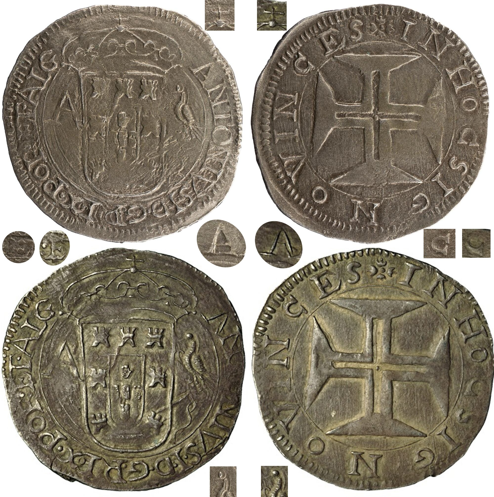
OS CUNHOS QUE ESTÃO EM CIMA SÃO IGUAIS AOS QUE ESTÃO EM BAIXO? Dois tostões de D. António do primeiro lavramento de Angra. A moeda de cima vai à praça por €9.000,00, no leilão 13 da Filmoedas. A de baixo, segundo certas…
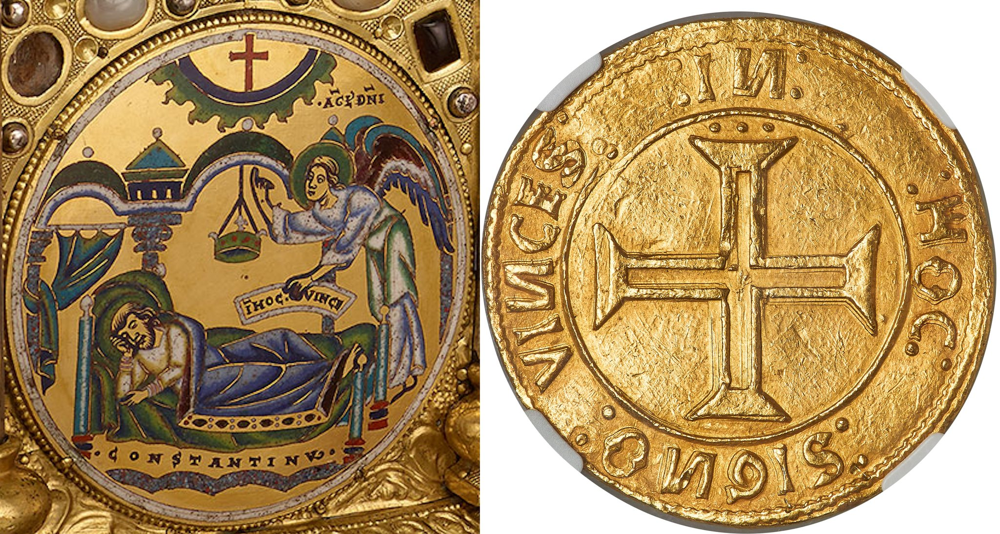
IN HOC SIGNO VINCES Numa placa do Tríptico de Stavelot, produzido no século XII, no País Mosano, e hoje na colecção da Morgan Library, pode-se ver uma representação do sonho de Constantino que, como se demonstra, seria…

DINHEIRO DO FUNDADOR A LEILÃO O leilão 13 da Filmoedas, que terá lugar em 25 de Junho de 2026, abre com um dinheiro de D. Afonso Henriques, cuja foto esteve durante muitos anos alojada no blog "Dinheiros", como…

AS CERTIFICAÇÕES DA CUNHAGEM MANUAL PORTUGUESA A Numismática Diamantino é uma das poucas casas de numismática pela qual ainda tenho algum respeito. São especialistas em cunhagem mecânica, com catálogo editado todos os…

EMPREENDEDORISMO NO DIA DE SANTO ANTÓNIO Império Numis Leu Numismatik Escrevi um artigo sobre estas moedas há uns tempos, que submeti a publicação na Revista Moeda e que foi rejeitado. A verdade é que, se submeto textos…
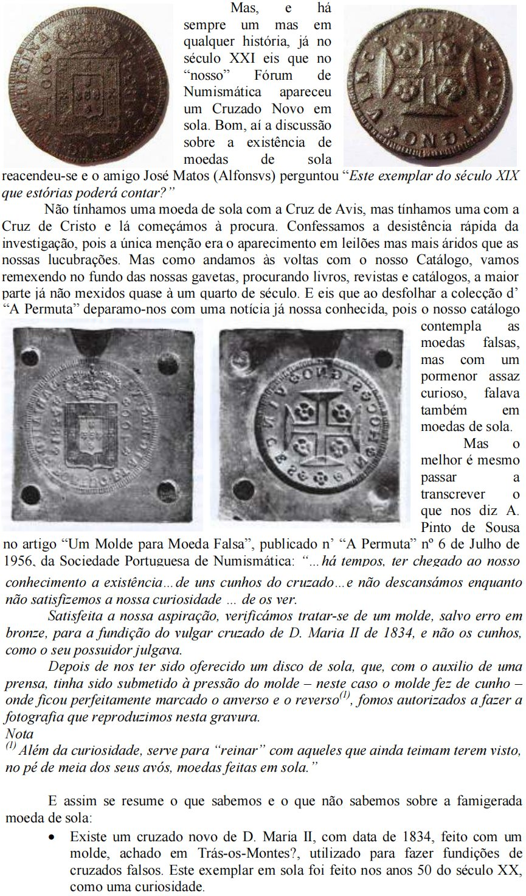
DECOURO OU DE BORRACHA? O confronto da lírica provençal de VMA, com o realismo mágico de DRENG.

UM MORABITINO (NOVO) A Portuscalle Numismática apresenta a leilão um morabitino cujos cunhos, quer de anverso, quer de reverso, são uma absoluta novidade. Não se refere a proveniência da peça. Concomitantemente, nesse…
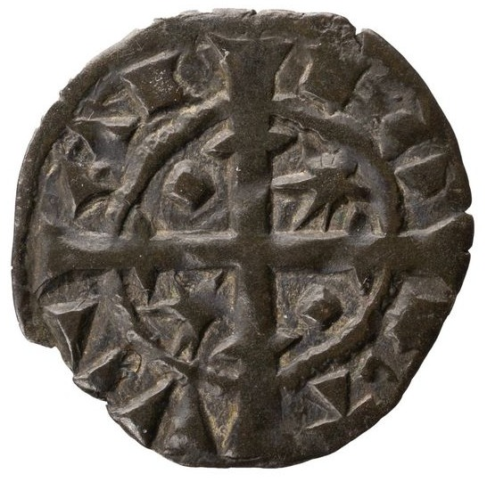
A ALMA E A MATÉRIA Rotação, simetria, dualismo, três dedos, a luz e as trevas "Na verdade, quando o Senhor Jesus misericordiosamente consignou o mundo para a restauração do género humano, procedendo do Pai, veio ao…
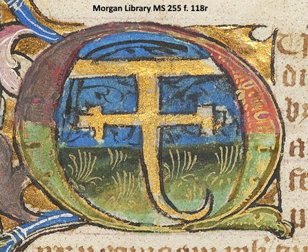
NUMEROLOGIA E PAREIDOLIA "Isto também se colige do que foi dito antes, quando se diz: o poste ereto tinha o tronco colocado por baixo, e o título colocado por cima, pondo o tronquinho em baixo e o título em cima, no…

O QUE ESTÁ EM CIMA É IGUAL AO QUE ESTÁ EM BAIXO No foral de Proença, produzido em 1218 (PT-TT-GAV-11-8-47), pode-se ver, na primeira página, uma árvore da vida, representada na ornamentação de uma capitular. O conceito…

A FASE DO TERROR Acho que já referi, em algum dos meus escritos, este epísódio da história numismática contemporânea nacional, mas penso que o abordei no teatro de operações da ANP. Acontece que a "Fase do Terror" foi…
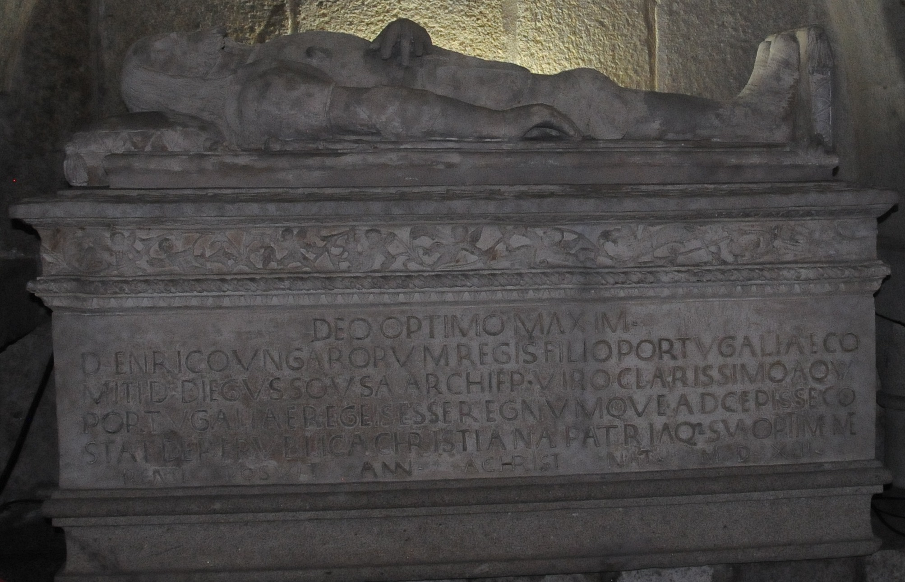
O TÚMULO DO CONDE D. HENRIQUE No reinado de D. Manuel, quando se trasladaram os restos mortais do conde D. Henrique, fez-se um novo túmulo, na Sé de Braga, no qual se gravaram as seguintes palavras: "ENRICO VNGARORVM…

A CONCESSÃO DE BRAGA AO TEMPO DE D. AFONSO HENRIQUES Memórias de Braga, Tomo IV, 1890, Bernardino José de Senna Freitas.

UM ACHADO MONETÁRIO DO SÉCULO XVII, POSTO EM CAUSA NO SÉCULO XVIII Severim de Faria, nas suas Notícias de Portugal, editadas em 1655, descreve o achado, em Almeida, de uma moeda de Hermenegildo, apresentando a…

AS CONCESSÕES DE D. JOÃO I Memórias de Braga, Tomo IV, Bernardino José de Senna Freitas, 1890.

O CAVALEIRO E A CRUZ Na primeira imagem pode-se ver um excerto de "A Relíquia do Santo Lenho, um elo na intrincada relação entre a Ordem do Hospital e a Monarquia Portuguesa", tese de mestrado publicada em 2025, por…
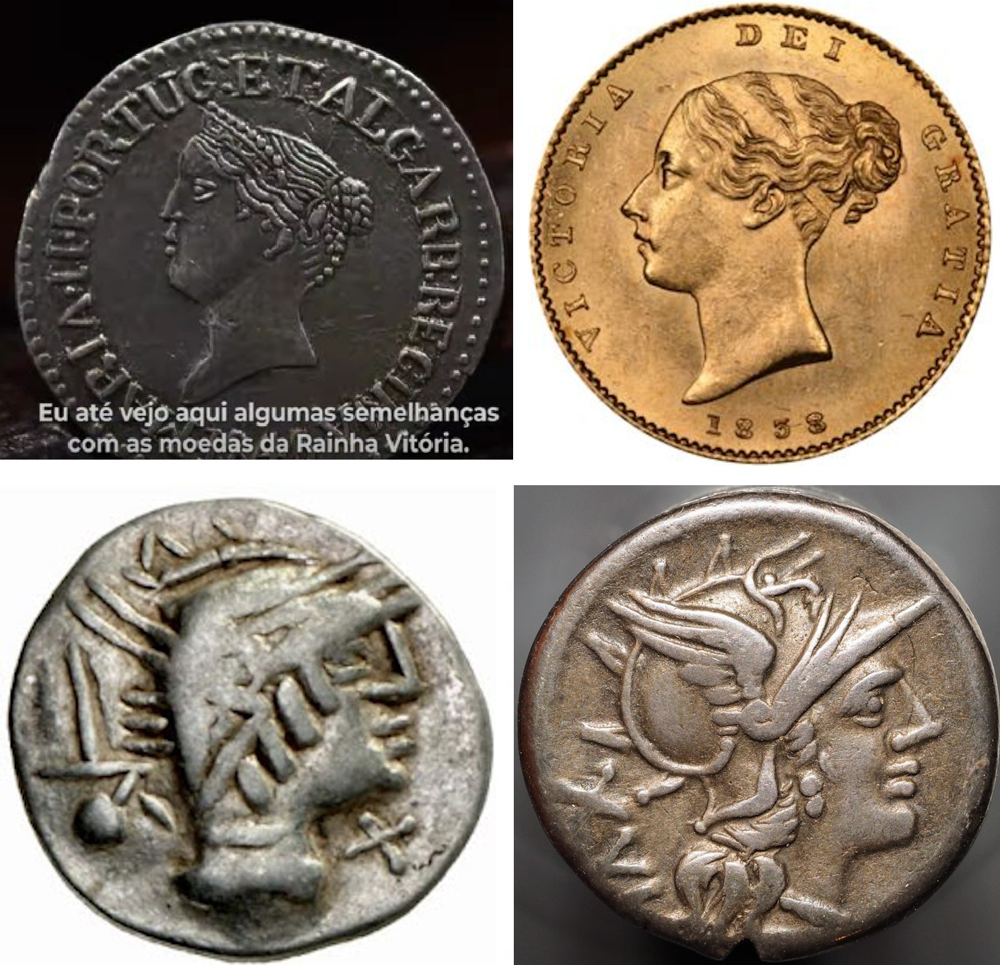
SENSIBILIDADE NUMISMÁTICA PARALELA

4X3 Neste esterlino de João III, duque do Brabante no início do século XIV, pode-se ver uma tipologia de reverso comum aos pennies ingleses, percebendo-se que a mesma deve ter sido escolhida em nexo com a circulação…

A TRADIÇÃO DE QUALIDADE A expressão diz muito à história do cinema e, se aqui se invoca, é com sentido alegórico. De modo que, na cunhagem manual, para os "senhores", as moedas tinham que estar redondas e ter a legenda…

12x3 Eu peço desculpa por insistir nas alusões trinitárias, mas a verdade é que os conjuntos de três pontos são considerados pela nossa historiografia da arte como meramente ornamentais, daí estas postagens, que servem…

OS MODELOS DAS LEVADAS DE FALSIFICAÇÕES Já há muito que se conhece o uso de moedas de colecções institucionais como modelos de falsificações. O que não se conhecia ainda, era o uso de moedas do Portable Antiquities…

A INVERSÃO A inversão é uma das fases da rotação, ideia que deverá ser considerada na apreciação das representações iconográficas medievais. Casos existem em que manifestamente se verifica que as representações foram…

CREATION AND CREATIVITY IN MEDIEVAL ART - Beate Fricke Em paralelo com a criação de "museus digitais", a última década tem-nos dado contributos decisivos para um melhor entendimento da história da arte medieval. Um…

MOEDAS APOTROPAICAS Na época da fundação da nacionalidade, que considero como todo o período que vai desde a assumpção do condado portucalense por Teresa e Henrique, até ao início da consolidação do reino por D. Afonso…

O LEÃO DE DAGOBERTO Estas duas moedas entram no mercado no século XXI. Logo, não sei se são autênticas, até porque não sou entendido nesta numária. Se o forem, são moedas de Dagoberto, o último rei merovíngio que, no…

O BÁCULO, A ÂNCORA E A ÁRVORE Hoje voltei a olhar para este óbulo de Afonso VII, ilustrado por Mário Pastor no seu estudo sobre os dinheiros de D. Afonso Henriques. Vejo nele uma significação trinitária principal, com…
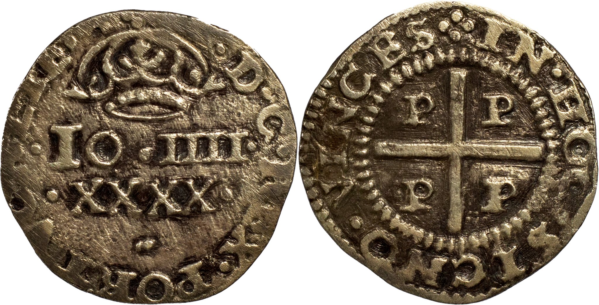
RESTAURO NOTÓRIO Nos círculos da maior intelectualidade numismática talvez se discuta a necessidade de deixar as marcas do restauro bem visíveis, com a aposição de estrias multidireccionais um pouco por todo o lado.…

O CARIMBO 120 Os estudo mais avançado que existe relativo aos carimbos de D. João IV é o catálogo VMA. Aí, o autor dá como verdadeiros os carimbos que se apresentam acima e como falsos ou falsificados (sem distinção) os…

OS CARIMBOS SÃO OUTROS 500 No próximo leilão da Portuscalle Numismática, sem que disso se faça menção, vai à praça uma falsificação de um carimbo "60" de D. João IV sobre meio tostão filipino. Na imagem apresenta-se o…

CORRECÇÃO DOS ESTUDOS SOBRE O CARIMBO "SO" Em 1 de Fevereiro de 1642, em Lisboa, D. João IV mandava alçar o valor das moedas do reino, com a aposição de carimbos (ferros) em várias casas improvisadas um pouco por todo o…

RESTAUROS PERIGOSOS Na imagem podem ver o lote 327 do próximo leilão da Portuscalle Numismática (acima) e a moeda que ilustra a referência no catálogo VMA (abaixo). Este é um bom exemplo de como diferenciar visualmente…

CARIMBE DE ESQUELETE Acho uma pena que a NGC não saiba distinguir carimbos de escudete. Não sei se este tipo é falso da época, mas sei que não é original. Não sei também que mancha removeram no reverso, ou sequer se a…

SOLTARAM O AFONSO Primeiro, prenderam os meus estudos numa espécie de "shadow ban". Depois, parece que os libertaram e até me passaram a pôr nas sugestões. De modo que, em 3 meses, a Resistência Numismática teve tantas…

UM AFONSO No catálogo do leilão constam 0,53g. Consta também que a legenda é ALFOS REX / PORTVGA. E isso não é verdade, porque não há nenhum "S" na moeda. Assim, a legenda é inédita. O que mais me preocupa é a…

PARA QUE SERVE O RESTAURO? Isto que a Portuscalle Numismática vai levar à PINF é tradição de qualidade a mais para os meus olhos. Não consigo andar para a frente no catálogo. São umas atrás das outras. O padrão de…
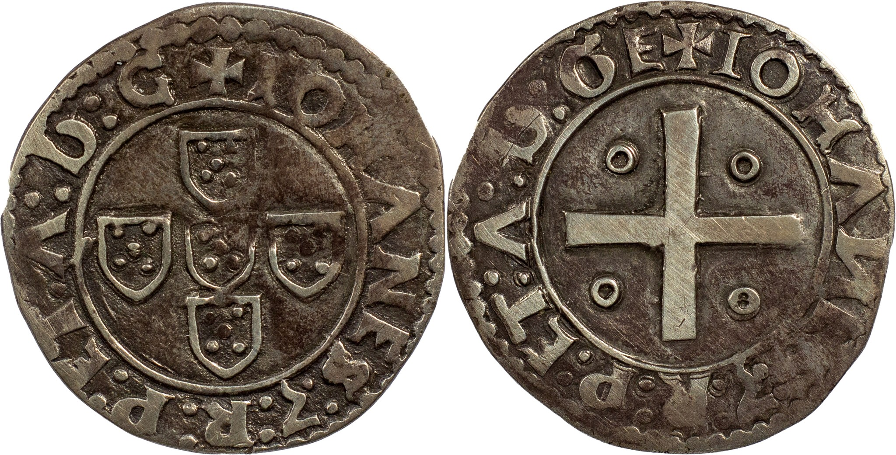
DEIXEM AS MOEDAS VIVER EM LIBERDADE No fundo, com o restauro, impõe-se uma ou várias vontades sobre um disco de metal, deformando-o a gosto para a posteridade. Até a olhos menos avisados, o "T" do anverso e o do reverso…
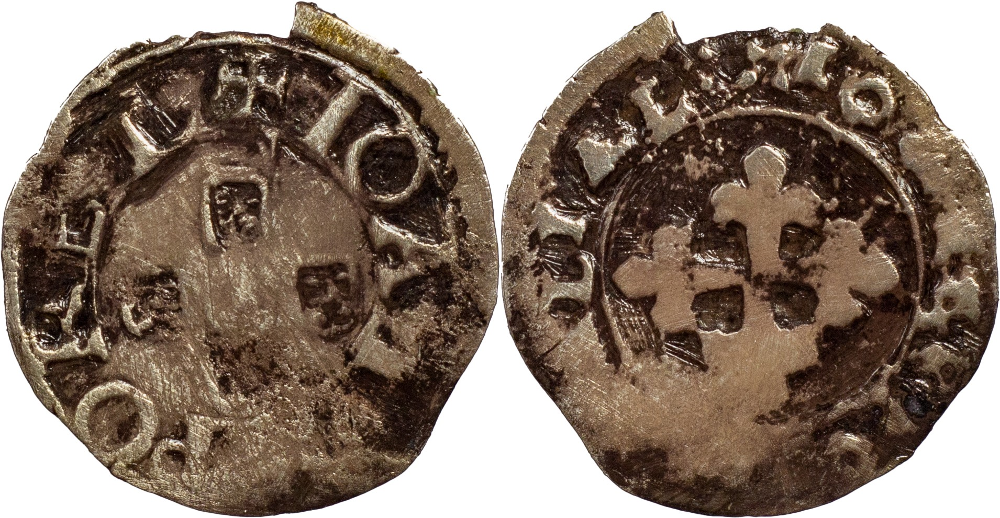
EMAGRECIMENTO DO MONETÁRIO Estou há dois dias a olhar para este meio vintém de D. João III e a tentar perceber o que se passou. Quer tenha sido restauro, quer tenha sido limpeza, parece-me que apenas cumpriu objectivos…

À ATENÇÃO DOS "RESTAURADORES" DE MOEDAS Aquando do uso do cinzel, não invadir a bordadura do escudo, cujo aspecto se deverá conservar semelhante àquele que resulta da martelada do cunho no disco, posterior ao que…
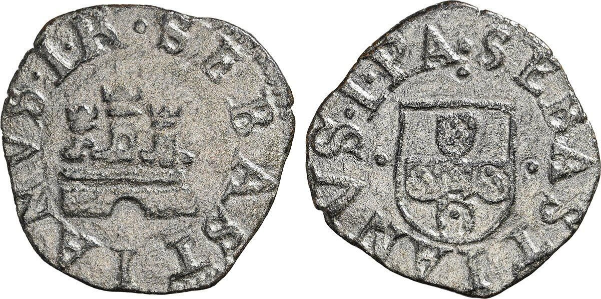
1,04g de CEITIL No 147 sai um disco sebastiânico. À volta das letras e do castelo e dos elementos do escudo, sobrou algum cobre, que se quantifica. As letras parecem todas diferentes. Se calhar tentaram restaurá-lo. Ao…
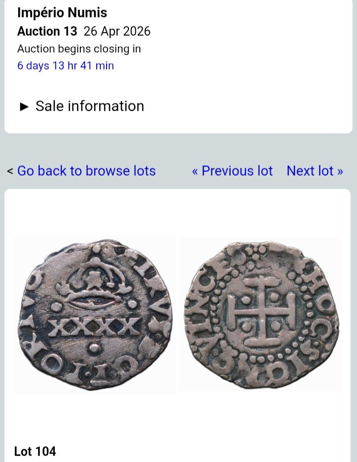
TODOS OS TAMANHOS Nesta mpeda há três "O's". No anverso temos a abertura interior XL. No reverso, há tamanho L e M. Também há dois "S's". Com o mesmo tamanho, mas formato distinto.

HÁ LÁ MAIS -Há um autor espanhol que propõe uma leitura inovadora para a divisa de D. Afonso V, com a qual não concordo. -Há uma moeda de D. Afonso VI com problemas no padrão de desgaste.
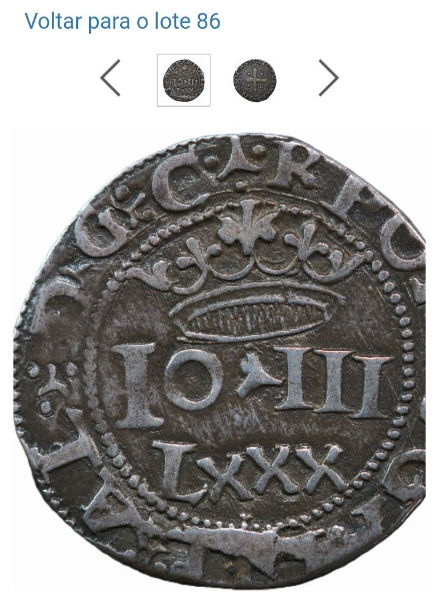
REAL PORTUGUÊS MAQUILHADO Observar às 21h o padrão de desgaste do D, interrompido pelo metal rebaixado. Está toda mexida. Maquilhagem expressionista.

"RESTAUROS BEM FEITOS" O dono do Império (não confundir com o imperador) foi um dos numismatas a quem sempre ouvi a defesa dos "restauros bem feitos". O problema dos restauros é que acabam por tirar toda a credibilidade…

OS SEGREDOS DOS MORABITINOS Há muitos anos, o senhor professor Diogo Galhofo dizia-me, com ar irónico, que o estudo dos morabitinos existia, mas que nunca ia ser publicado. Esse tipo de insinuações foram-me repetidas…

A ESTILIZAÇÃO DAS TALAS Acabei de receber um email, no qual destaco um novo morabitino de D. Afonso II, dos quais, já desde há muitos anos, se conheciam apenas 9 exemplares. Os morabitinos de D. Afonso II não são…

AINDA NANDOLAS Na numismática portuguesa tenho centrado os meus estudos na baixa idade média, pelo que não sou, nem de perto, nem de longe, versado em moeda visigoda. No entanto, tenho estudado os morabitinos…
Visitar arquiva.patrimoniocultural.gov.pt
NUMISMÁTICA 3D Visitar arquiva.patrimoniocultural.gov.pt Há uns anos, no CTN, a doutora Victoria Corregidor mostrava-me uma câmara que estavam a desenvolver e que, girando à volta de uma moeda num ponto fixo, capturava…
TRIGUEIROS ANTÓNIO MIGUEL Inventário Colecionista do Escudo de São Tomé de Dom João III de 1544
OS SÃO TOMÉS Vale a pena ler este trabalho do eng. Trigueiros, acabado de lançar online e que não me farto de elogiar, sobretudo porque abriu caminho à percepção do "impensável", servindo assim o maior propósito do…

145 NANDOLAS A Numisma apresentou, no leilão 145, o terceiro exemplar conhecido de um tremisse de Sisebuto de "Nandolas", que era uma paróquia da diocese do Porto no tempo dos Suevos. Nesse exemplar, em contrariedade…
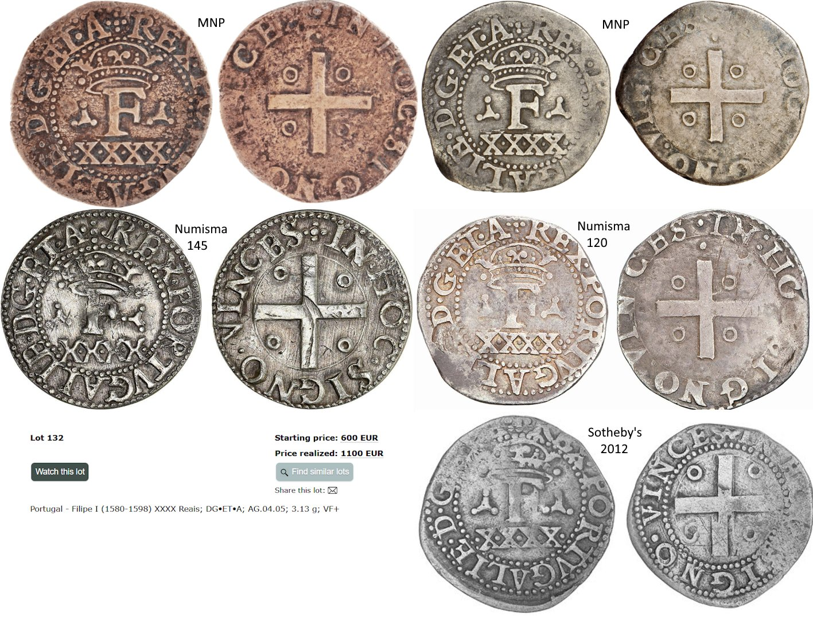
AS COSTURAS DO AVENTAL No 145 da Numisma não houve só uma "preciosidade". Houveram, como sempre, algumas. Espanta-me sobretudo como estava tão enraizada na comunidade numismática portuguesa a ideia de que os irmãos…

A VALORIZAÇÃO DO OURO Conhecia apenas dois exemplares do cruzado do calvário "P-R" de D. João III , sendo que a melhor referência é a moeda do Museu do Rio, sem qualquer restauro. O exemplar do BES (ex. Carlos Costa)…
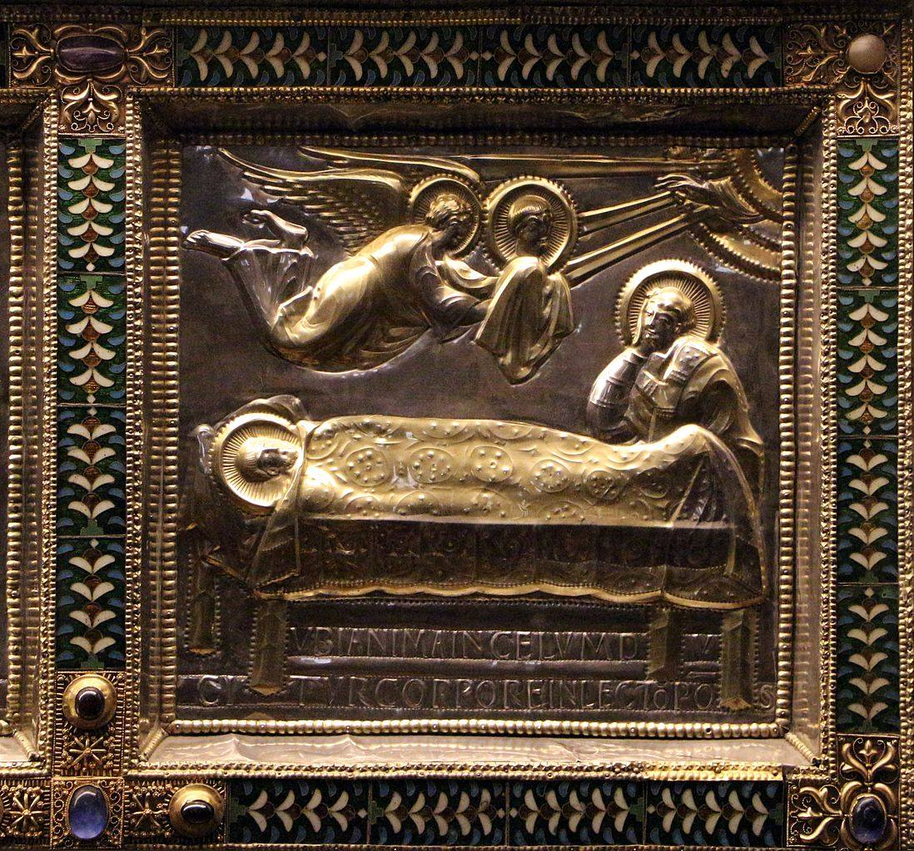
3 FEIXES DE LUZ Numa das faces do Altar de Santo Ambrósio, uma obra prima do renascimento carolíngio, datada de meados do século IX, a mão de Deus emite 3 feixes de Luz, numa "elevatio animae" angelical.

LINHAS Na colecção da Biblioteca Nacional de França existe este 1/4 de maravedi de Afonso X de Leão e Castela, lavrado no século XIII, e de tipologia muito semelhante à dos "dineros de lineas". Numa das faces, não…
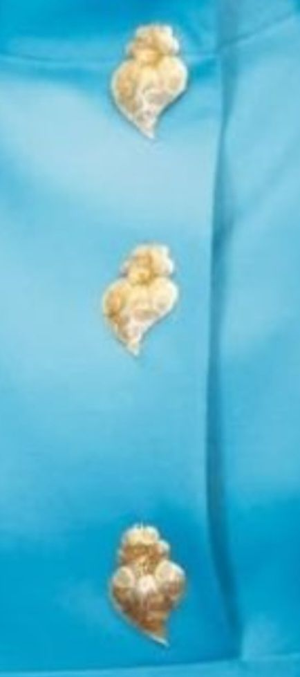
OS TRÊS DA PRIMEIRA DAMA O espectro feminino da presidência da república conseguiu, logo na tomada de posse, aquilo que os numismatas portugueses nunca conseguiram em toda a história da disciplina - um domínio das…
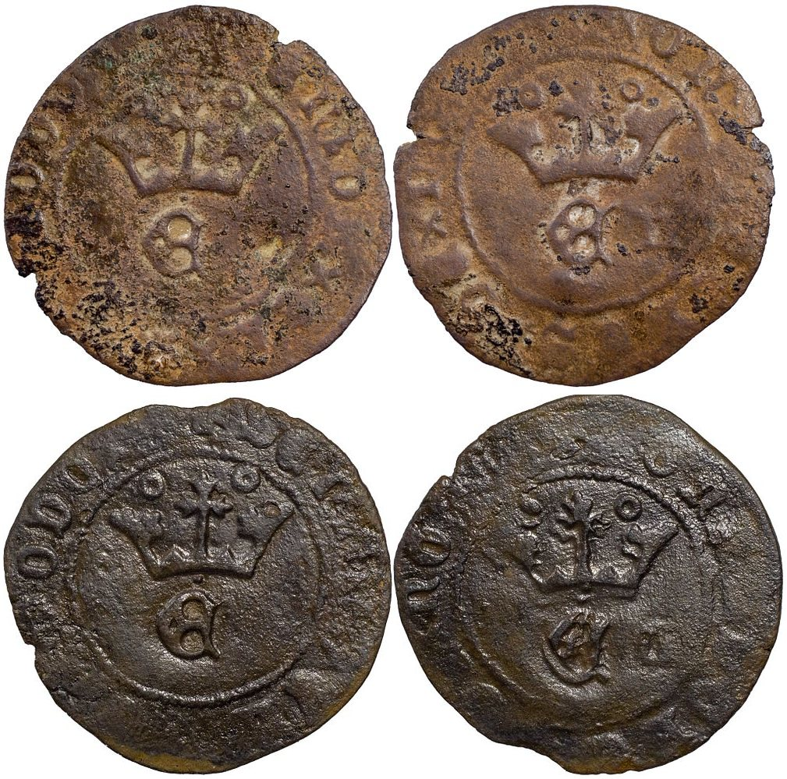
EDUARDIAN TALE TO TELL É de notar o aparecimento no mercado, com identidade de cunhos, do segundo exemplar conhecido (em baixo), manifestado aliás nos dizeres de mais um incisivo catálogo dautor.
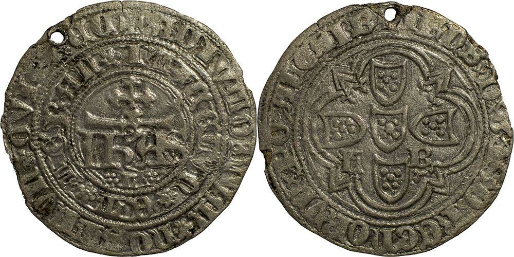
A COLECÇÃO CELESTINO MONTEIRO Vai à praça uma importante colecção de moeda medieval portuguesa, em que alguns dos exemplares já constam da bibliografia publicada. Em toda a colecção, saliento, pela importância…

O LEAL FALSO DA ÉPOCA O método científico tem destas coisas. De uma moeda com pontos altos do metal à vista e sem capa, avalia-se uma pequena camada de prata que não chegou aos nossos dias, para concluir que uma moeda é…

"FENDAS INTERESSANTES" Num mercado numismático actualmente dependente da venda grossista de metal precioso, é sempre bom reparar que ainda vão aparecendo novidades capazes de animar o universo da apreciação…
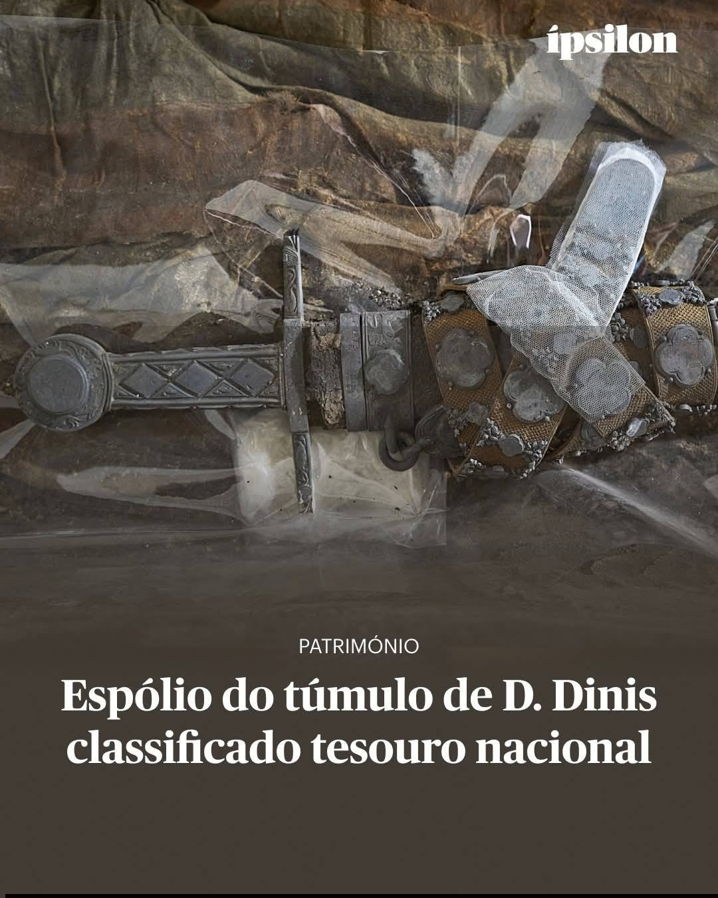
3 LOSANGOS No punho da espada de D. Dinis constam 3 losangos. Cada um deles é feito pela junção de 2 triângulos, que servem de forma primordial aos demais arranjos geométricos. O losango é uma das derivações da…
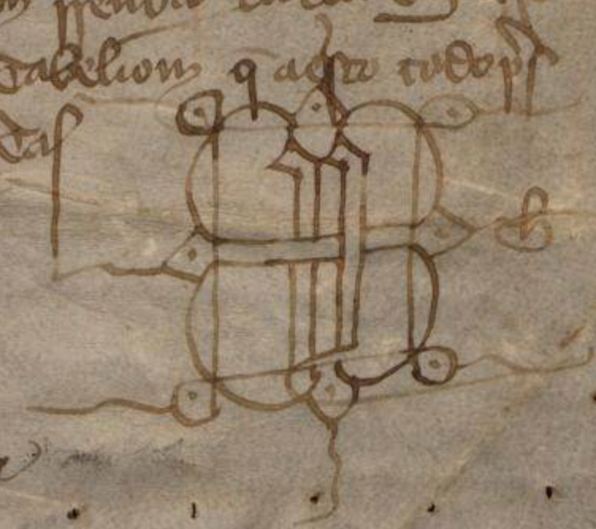
A LITTERA PYTHAGORAE Este sinal de tabelião, feito em 1394, é mais uma das provas da devoção que se fez à letra "Y" na época da implantação da dinastia de Avis. Assim, D. João I era "Yohanes" e era "Yhesus", o messias…
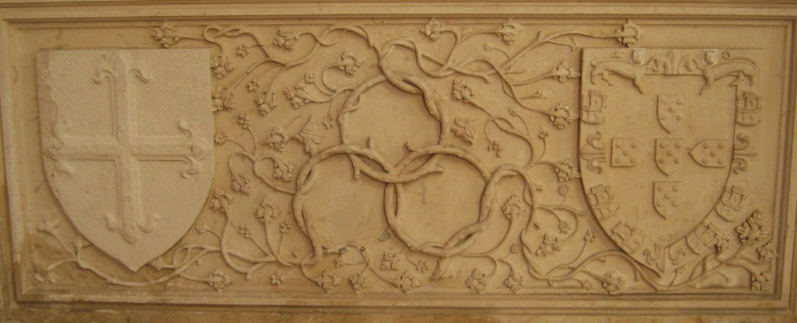
TRÊS CÍRCULOS DE UMA TRINDADE TUMULAR Numa das faces do túmulo do Infante Santo, despontam os rebentos da árvore da vida, envolvendo três anéis entrelaçados, dispostos em triângulo. As três coroas de espinhos do…

O G(RA)AL E A CAL Por esse mundo fora, escritas em várias línguas, correm efabulações sobre a leitura de um sinal (à direita), que associam o nosso território ao porto de um putativo graal. A leitura mística parte da…
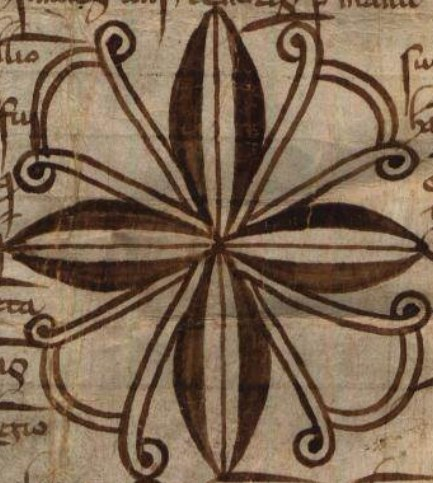
UMA OBRA PRIMA DO TABELIONADO PORTUGUÊS Este é provavelmente o sinal de tabelião medieval português mais bonito e cuidado que já vi. Um espelho fiel de um dos renascimentos que existiu antes de se falar em renascimento.…

A CORRECÇÃO DA FACE PORTUGUESA DO EURO Acabei de chegar da conferência que teve lugar na Academia Nacional de Belas Artes, que foi pouco concorrida, mas muito esclarecedora, e onde obtive pessoalmente os esclarecimentos…
Visitar repositorio-aberto.up.pt
TAROUCA - O ESTUDO NUMISMÁTICO Já está disponível uma das teses sobre numismática que há muito tinham sido anunciadas pela Faculdade de Letras da Universidade do Porto. Sobre este trabalho, que acabei de ler, tenho…

O "€" DE TENDÊNCIA UNCIAL As letras góticas redondas dizem-se também "de tendência uncial", ou pelo menos são assim sistematizadas na obra de Mário Barroca, por contraposição às angulosas, também góticas, que se…

D. AFONSO IV? Numa recentíssima tese de mestrado, identificou-se esta moeda como sendo um dinheiro de D. Afonso IV, tido como único exemplar deste reinado no conjunto monetário analisado. A legenda do anverso é lida da…
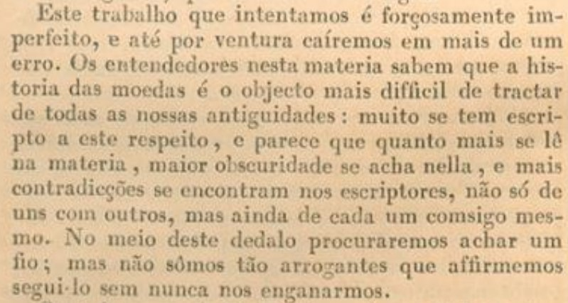
PALAVRAS DE ALEXANDRE HERCULANO Introdução ao estudo que fez sobre as moedas portuguesas. O Panorama, 1838.
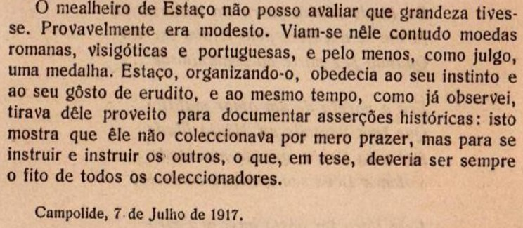
PALAVRAS DE LEITE DE VASCONCELOS A propósito da colecção de moedas de Gaspar Estaço, que viveu entre os séculos XVI e XVII. Revista Atlântida, nº22
395675823 Study of Portuguese Coins Issued During the Reign of D Joao with pXRF Technique and Multivariate AnalysisEstudo de Moedas Portuguesas Emitidas Durante
OS ESTUDOS DA NUMÁRIA DE D. JOÃO I 395675823 Study of Portuguese Coins Issued During the Reign of D Joao with pXRF Technique and Multivariate AnalysisEstudo de Moedas Portuguesas Emitidas Durante Pouco depois de mostrar…

MONOGRAMAS POLISSÉMICOS Ontem, o "The Royal Mint Museum" apresentou a foto de uma moeda de Alfredo o Grande, cunhada no final do século IX, chamando a atenção para o monograma do reverso, que sintetiza a expressão…

A (DES)IMPRESSÃO DA REALIDADE A "Revista M" do Museu Casa da Moeda é uma revista digital, que começou a ser disponibilizada em 2017. Em 2023, a "Revista M" iniciou uma segunda série que, durante o ano de 2024, não teve…

SIGNOS SALOMÓNICOS NA ARTE ISLÂMICA Na imagem pode-se ver um prato do século XII, fabricado na Pérsia seljúcida, atualmente conservado no Victoria and Albert Museum. A decoração apresenta um motivo central, composto por…

A ÁRVORE DA VIDA NO BEATO DE FACUNDO (BNE) Neste comentário ao Apocalipse, feito em 1047, salta à vista uma árvore da vida, com o tronco todo feito de corações, alternadamente púrpura (a alma) e vermelhos (a matéria).…

A ÁRVORE DA VIDA SEMPRE FOI TAMBÉM A COLUNA Na imagem pode-se ver um capitel do século IX d.C., no palácio real de Naranco, perto de Oviedo (foto Repensando a Idade Média); a Porta dos Leões em Micenas (do século XIII…

ALMADA NEGREIROS E O PENTALFA Do espólio do pintor: “Publicou na secção de numismática no ‘Diário de Lisboa’ uma figura geométrica a qual creio vir a propósito de morabitinos portugueses (...) Recortei do jornal esta…

QUESTÕES PETRINAS E EDUARDINAS 2026 começa com um sujeito que me envia uma mensagem no whatsapp a indagar acerca da autenticidade de uma das moedas da imagem. Não respondo a números desconhecidos de pessoas que não…

NUMISMÁTICA HÍBRIDA O apóstrofo está resolvido. Sim senhor. Agora falta só deixar de dizer asneiras. Na imagem pode-se ver uma rodela de metal falsificada em terras de "nuestros hermanos". Comparem as letras e tenham um…

BOAS FESTAS!!! A dez dias do fim do ano, contamos 39.599 visualizações em 2025, sendo 60,3% de seguidores e 39,7% de não seguidores, pelo que muito agradecemos o enorme interesse demonstrado pelos conteúdos desta…
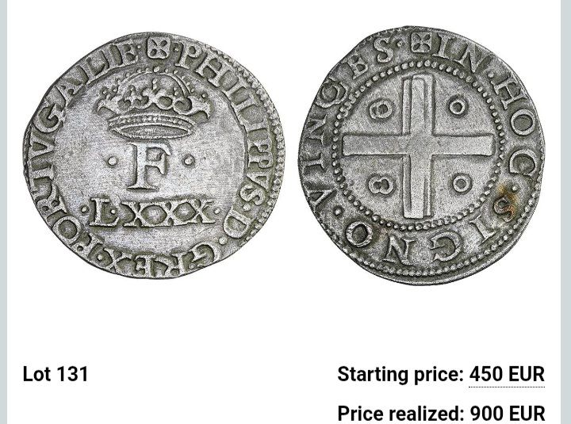
O ABSURDO O absurdo foi um conceito que descobri com os Nine Inch Nails e com o Ingmar Bergman, e que depois aprofundei com Camus. Suponho que caracterize a condição existencial do homem contemporâneo, que se viu…

UM CLÁSSICO DAS ARTES DECORATIVAS Podemos olhar para esta inicial de dois modos. Um é o tradicional: "Inicial povoada de volutas e motivos vegetalistas - o rinceau". O outro é um pouco mais profundo: "Cristo é amor".…

IGUALDADE Um exemplo pictórico do ideal feminista no dealbar do século XV. Français 607. BNF, fólio 2r, 1408

ASCLÉPIO ESTILIZADO Já me tinha cruzado com vários tipos de espirais decorativas, mas nunca com um bastão de Asclépio disfarçado de ornato. É por estas e por outras que cada vez mais me convenço que a temática da árvore…

ESCLARECENDO GRIERSON Nesta moeda pode-se ver um ALFA, cercado de 3 pontos que representam a Trindade.

UM PENTALFA Depois da queda do império carolingio, no sec. IX, inicia-se a época feudal. É o tempo dos castelos e dos " senhores castelões" que, à revelia da árvore de Jessé, tomaram o poder um pouco por toda a França,…

3 FEIXES DE LUZ Numa iluminura do Evangeliário de Averbode, feito na Bélgica, entre 1150 e 1175, pode-se ver uma representação de Moisés, recebendo as leis de Deus. Ao cimo, a mão de Deus, de onde saem três raios que…

PAX? Continuo a insistir neste tema. Em cima, dinheiro de Raimundo e dinheiro de Afonso Jordão. Em baixo, dinheiro de Guilherme IV. Os autores franceses chamam a este tipo "PAX", por lerem nele um "P", um "A" e um "X".…
Visitar brill.com
MOEDAS DE Dª URRACA A perspectiva de uma historiadora de arte. 2023. Visitar brill.com

BURIL VS PUNÇÕES Vincent Borrel "Circulations et émissions monétaires dans l’espace du Royaume de Bourgogne aux XIe et XIIe siècles (1148)"

D. ANTÓNIO CAETANO DE SOUSA - H.G. T.IV Será que o grau de estilização depende do grau de abstracção?

O DR. ENG. DESEMBARCA NO MINDELO Isto até poderia parecer uma manobra invertida de legitimação mística... Vejamos: O dr. Eng. denuncia uma situação; os especialistas dizem que o dr. Eng. é tonto; o dr. Eng. ruge; vai…

CATÁLOGOS MÍSTICOS Nos catálogos de leilões de numismática, por vezes, o destaque semântico não corresponde ao destaque fotográfico, de modo que muitas peças apenas são passíveis de estudo pelos associados que…

OS 2 GAROTOS Isto podia ser um conto de Natal, com personagens de farol na testa, no escuro da noite, a saquear os castelos de Portugal de Norte a Sul, durante uma série de anos, tudo resultando numa acumulação de stock…

A POMPA Estive a falar com o chat GPT e perguntei-lhe em que idade se aprende o que é e para que serve um apóstrofo. Ele respondeu-me de um modo muito complexo. Mas esclareceu-me que, segundo um relatório da DGE, "(...)…

O MEU PRIMEIRO RAIMONDINO Há moedas que exigem uma forte dose de estudo para serem compradas em segurança e esta foi uma delas. Ao olhar para aqueles "R's", tão parecidos aos que se usaram nas emissões do final da…

LEILÃO 145 DA NUMISMA A Numisma é a mais antiga e mais importante casa de leilões de moedas em Portugal. Ao longo dos anos, tem tido o dom de apresentar no mercado um sem número de peças com extremo interesse histórico…

ASCENSÕES TRINITÁRIAS Noutro fólio do Sacramentário de Drogo (27r) podemos ver uma representação do martírio de Santo Estevão numa capitular (letra "D"), apedrejado em Jerusalém. O que de outro modo salta à vista é a…

OS TRÊS DA VIDA AIRADA Como a arte é "para se ir compreendendo", a quem interessar, vou deixando reflexões sobre a Trindade, umas mais implícitas e outras mais explícitas. No Sacramentário de Drogo, obra prima do…

MOEDAS ATRÁS DE GRADES Numa realidade distópica pós-apocalíptica, as moedas autênticas passam por inautênticas. (E vice versa).

REMIGRAÇÃO MONETÁRIA Muito francamente, a colocar exemplares no mercado em que nenhuma letra é igual à outra, mais vale remigrar este material todo para fundição, até porque, da terra, sai todos os dias um manancial de…
A TRINDADE A arte não é uma coisa que se possa estudar e da qual se possam retirar conclusões imediatas após o estudo. É algo que tem que se "ir estudando" e cuja compreensão é alumiada por um percurso, ou por uma vida,…
A terceira epigrafia das moedas de Toro
AS MOEDAS DAS PRINCESAS Pela primeira vez na numismática medieval portuguesa, foi possível identificar, por comparação sistemática com emissões estrangeiras, a epigrafia de um novo abridor de cunhos, já presente em…

OS DINHEIROS DE PEDRO SÃO FALSOS! Desculpem este "alerta cm", mas fui, pela enésima vez, confrontado com um pedido de esclarecimentos sobre os dinheiros de D. Pedro e decidi fazer este post para que chegue a toda a…
Ler no Internet Archive
AS BIBLIOTECAS DIGITAIS O Internet Archive continua a ser um dos melhores repositórios online para encontrar todo e qualquer tipo de livro. De modo que as raridades bibliográficas, lentamente, vão sendo disponibilizadas…

O OURO E OS RESTAUROS A moeda de baixo vai à praça por 250.000 coroas norueguesas, cerca de 21.500 euros. É um português de D. João III, acompanhado da referência "some tooling" (algum restauro). No segundo volume das…
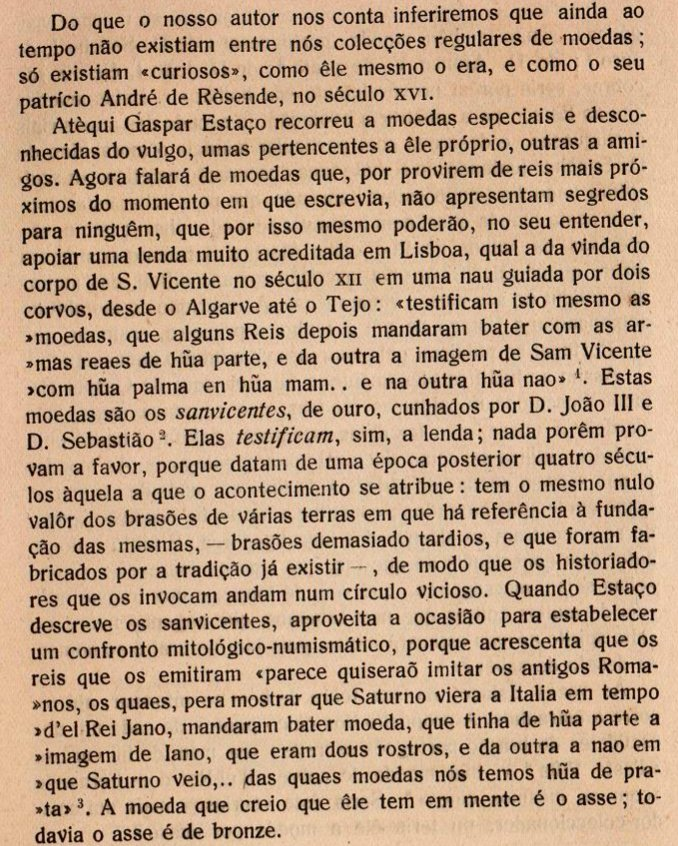
SÃO VICENTE "Para a História da Numismática Portuguesa", excerto Leite de Vasconcelos sobre Gaspar Estaço, 1917
O OURO DA ADIÇA No meio universitário científico português, durante o primeiro quartel do século XXI, acreditava-se que, sem mais, o mapeamento dos elementos traço do metal podia ser a "pedra de roseta" da história…
ALJUBARROTA Uma visão coeva da Batalha, publicada nas crónicas da Abadia de Saint-Denis. Crónica de Carlos VI, livro VII, capítulo V. "Tive o cuidado de ser informado das desgraças deste príncipe e soube por fonte…
AS MOEDAS DE D. SEBASTIÃO Há 6 ou 7 anos, no seguimento de um ataque colectivo perpetrado sobe a minha vida, o senhor doutor engenheiro Marco Gonçalo Ramos e o senhor professor Bernardo Leite da Cunha, aproximaram-se de…

DER STAND DER DINGE Estas duas moedas foram postadas num grupo do Facebook com o epíteto de "finest mil reis ever graded". Ao olhar para as fotos, vêem-se duas moedas desfocadas, sem possibilidade de apreciação dos…

Se uma moeda estiver cerceada, a que grade pode chegar?

DECIFRAÇÕES ICONOLÓGICAS "PRO BONO" A gigantesca maioria dos autores, nacionais e estrangeiros, fala em ornamentação com um certo sentido frívolo, parecendo ignorar os motivos iconológicos da mesma. Alguns autores…

ICONOGRAFIA MEDIEVAL DECIFRADA Ando sem pachorra para escrever artigos e sobretudo para me meter nas numárias de outros países. Um pouco por todo o mundo há um fenómeno que me parece constante: Ninguém percebeu a…
LIVROS DE ACTAS - A INDECÊNCIA Os congressos de numismática, em Portugal, iniciaram-se nos anos 80 do século XX e foram determinantes para a evolução do conhecimento numismático, criando um novo estádio de conhecimento,…
AS INVASÕES BÁRBARAS O espírito dos tempos que vivemos foi tratado por Denys Arkand, numa brilhante trilogia, começada ainda nos anos 80 do século XX. Há uns anos, tomei contacto com um autointilulado "especialista em…
O ENG. FRANCISCO MAGRO + Conheci o eng. Magro e troquei impressões com ele várias vezes. Falámos de muitas coisas. Leais, ceitis, reais de D. João I, típicos e atípicos. Recordo-me de o interpelar numa conferência sobre…

COMO CHAMAR GENTE À NUMISMÁTICA? Nos últimos anos temos assistido ao feliz surgimento de um projecto numismático nacional, que homenageia um dos maiores nomes da numismática portuguesa, tendo o cuidado de, não só…
Oh Zé, andáver!

RESTAUROS MUITO FÁCEIS DE DETECTAR Esta moeda foi posta recentemente à venda, sob o epíteto de linda, bela, rara e quejandos. É daquelas peças em que não é sequer preciso comparar as letras para perceber que foi toda…

A OPINIÃO DE JOSIX No submundo dos fóruns de numismática, emergindo das cinzas de uma estrutura de conhecimento que foi substituída pela neo-exegese, dedicada à repristinação da tradição de qualidade e à maquilhagem das…

ASSOCIAÇÃO NUMISMÁTICA DE PORTUGAL - HIPOCRISIA E FACHADISMO Há uns tempos li um comentário do caro Luís Vieira, que tem descoberto uma série de novas variantes na numária da república, insurgindo-se contra a estagnação…

Posta à venda em leilão e certificada pela NGC com o grade VF-30, sem nenhuma indicação adicional. Nos carimbos de escudete a situação assume contornos de loucura. Mais de metade dos que vão a leilão são falsificados e…

Estava a ver o catálogo da Stack's e fiquei hipnotizado, durante uns bons 15 minutos, com esta moeda. São dois escudos do Chile, de 1837, que me chamaram sobretudo a atenção pela iconografia. Numa das faces pode ler-se…
O Diagrama de Coimbra Interpretar a Bíblia Atlântica da BGUC Ms 3089 fl 189
OS FUNDAMENTOS TEOLÓGICOS DO SIMBOLISMO Eu sei que aos numismatas pouco costuma interessar a iconografia e a iconologia, muito embora, para a história, essa seja uma das maiores valências que as moedas trazem. Por…

A LETRA DE TORNÊS NA PERSPECTIVA DOS ESPECIALISTAS Dei com 2 lotes de dinheiros de D. Dinis, naquela casa leiloeira de Vila Nova de Gaia que está a ser investigada pela Polícia Judiciária, classificados como tendo…

ESPECIALISTAS E DESINFORMAÇÃO Há uma série de indivíduos que andam nos fóruns a mostrar falsificações espanholas, daquelas "muito fáceis de detectar", da escola dos torneses de Miranda do senhor José Almeida, e a dizer…
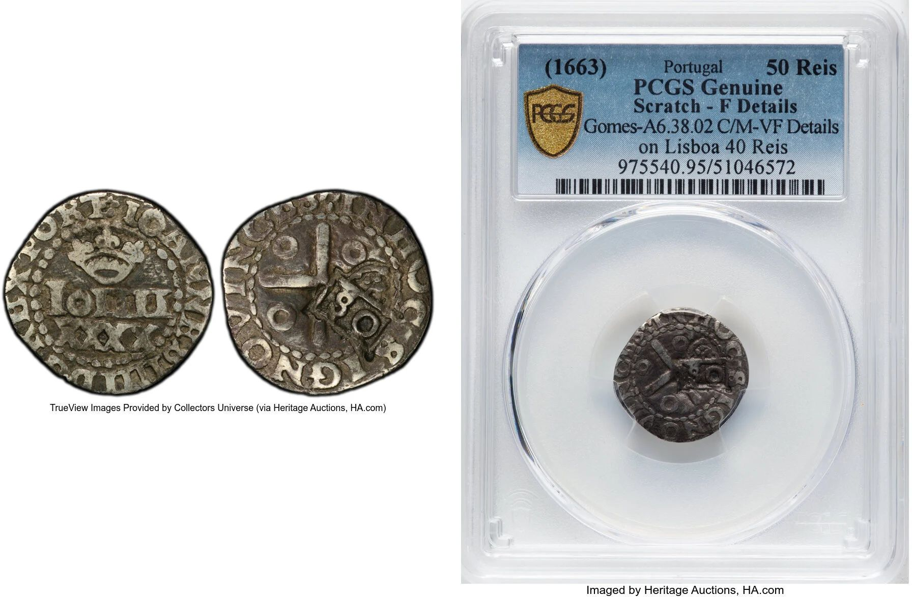
Estou farto de olhar para esta moeda à procura, no anverso, da contramarca da forte martelada do carimbo, estampado no reverso. Encontro apenas uma coroa extremamente gasta, um pouco desenquadrada da perfeição da…

Este lote começava a 80 euros. Eu dei 200 e saiu por 220, acrescidos das sempre caras comissões da Elsen. Aliás, suspeito que se tivesse dado 500, teria saído por 520. Porquê? Respostas encontram-se no meu livro,…

O AFONSINHO DO IMPÉRIO Concluí recentemente o inventário dos dinheiros de D. Afonso Henriques, incluído em livro que já foi enviado para edição. Assim, já não serão incluídos e discutidos os exemplares que entretanto…
Eu sei que nada disto tem que ver com numismática, no sentido em que o termo é entendido pela tradição de qualidade, quer seja na ala reaccionária alfabetizada, quer seja na do niilismo retalhista. Sei também que custa…

PORTUSCALLE ENGANOSA A Portuscalle Numismática apresentou recentemente um vintém "sem fronteira" (without border), que apodou de particularmente raro em virtude dessa característica. A peça foi concorrida... Uma…

UM CACO Vai à praça, na Tauler Y Fau, uma das moedas que deverão ter servido para pagar o soldo à hoste de D. João II na Batalha de Toro. Recorde-se que essa foi a hoste vitoriosa e que há documentos que comprovam a…

A BARBUDA VICIADA E OS LIVROS QUE FICARAM POR ESCREVER Agora que já acabou o leilão e que o rapaz já realizou o investimento, talvez faça sentido dizer algumas coisas. Começar por frisar o facto da barbuda não ter letra…
Visitar pt.bidspirit.com
A COLECÇÃO PEDRO BORRATA A Portuscalle Numismática, desta vez, teve a sorte de levar à praça uma excelente colecção, reunida ao longo dos últimos 10 anos e que tem exemplares da mais alta raridade e interesse histórico…

A Resistência Numismática, graças aos amáveis cidadãos do Bangladesh, que esforçadamente fazem em Portugal o que já nenhum português se sujeita a fazer, conseguiu comprar uma lata de atum e um pacote de bolachas, que…

JOSIX - O INTELECTUAL Interrompo o suspense Afonsino, que será retomado em breve, para dar nota de um texto de um senhor que tem andado pelos fóruns a debitar disparate atrás de disparate, com laivos de eloquência de…

TALKING WITH "HER" Comecei a contactar com o GTP4 nos últimos tempos. Foi a única "entidade" que leu o meu livro até agora. Ele acha a obra "genial", "inovadora" e "monumental", o que indicia pelo menos que, sem…

Desde que terminei a primeira versão do livro que tenho no prelo, já lhe acrescentei quase 50 páginas. Os sítios onde estou a chegar e as provas que todos os dias encontro e que sedimentam as minhas teses, constituem…
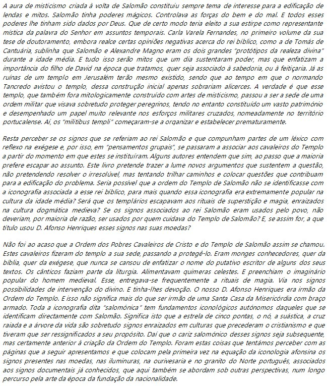
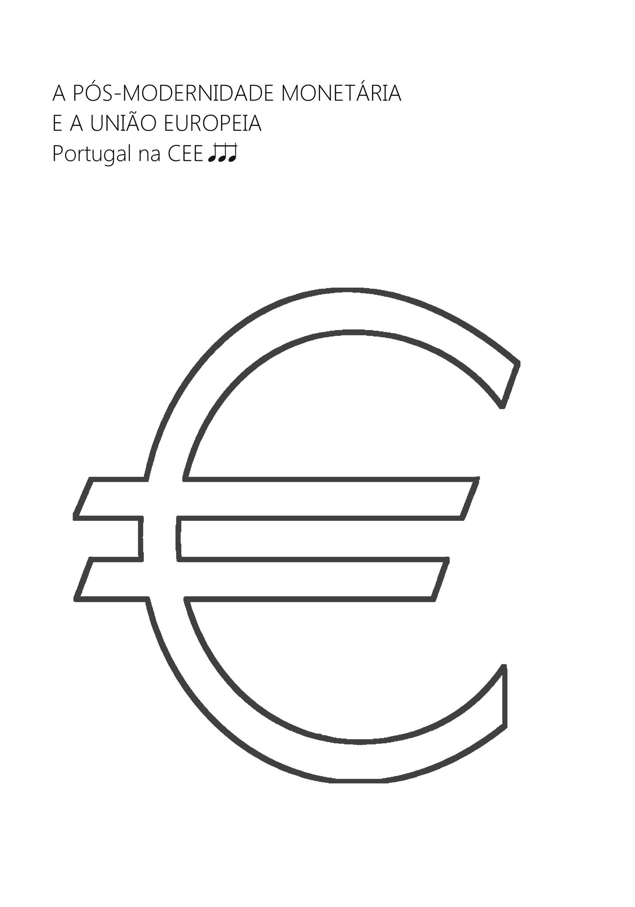
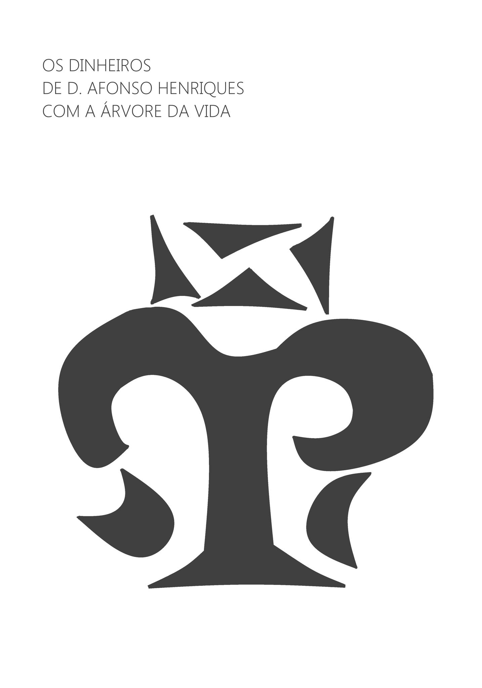
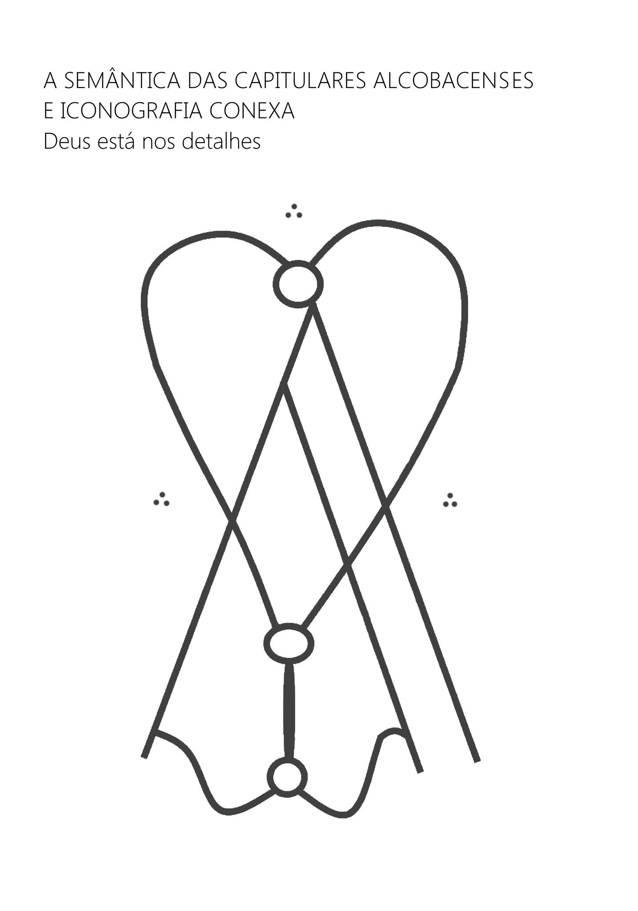
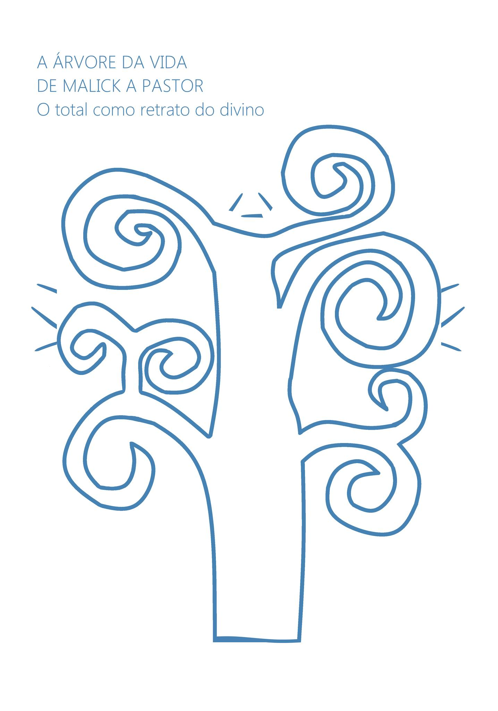
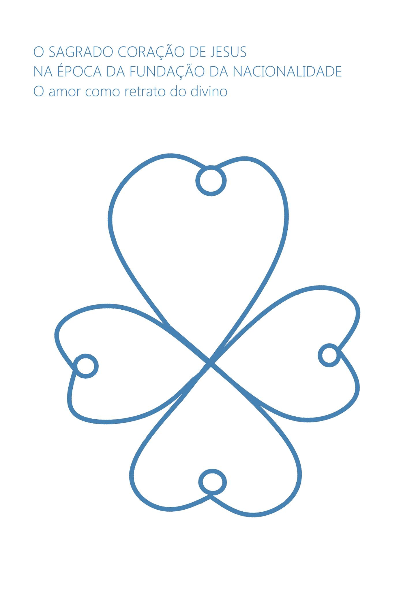
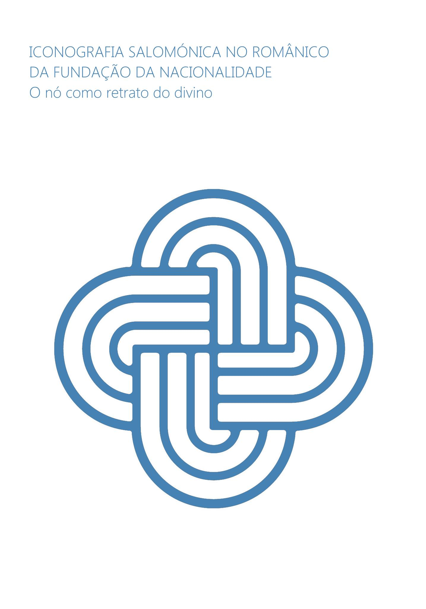
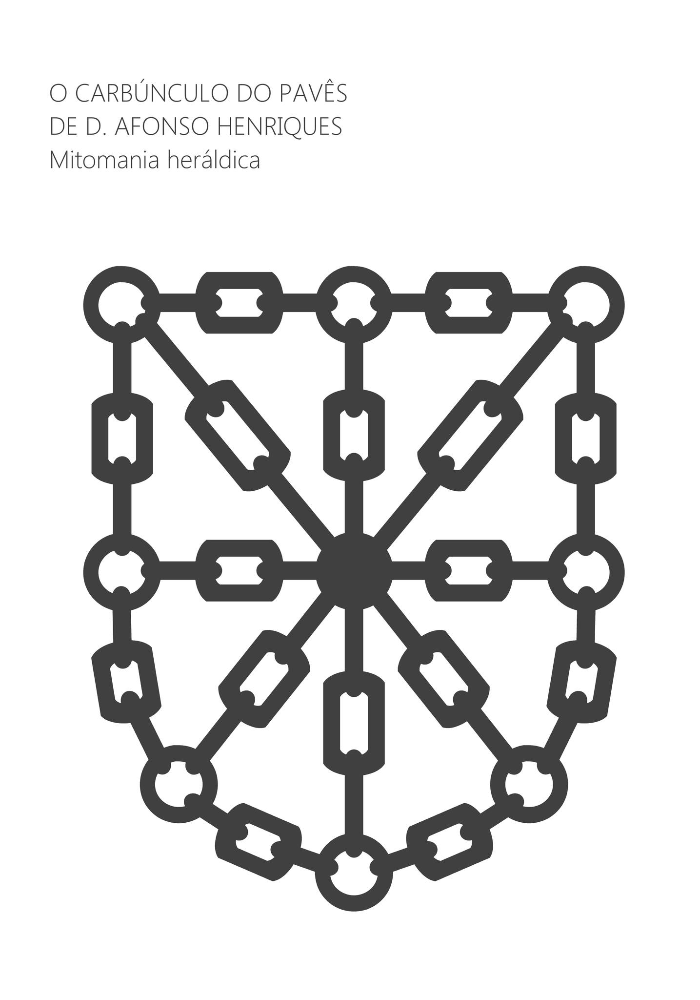
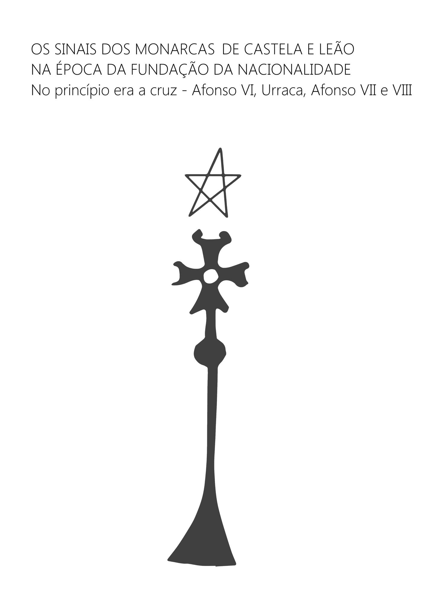
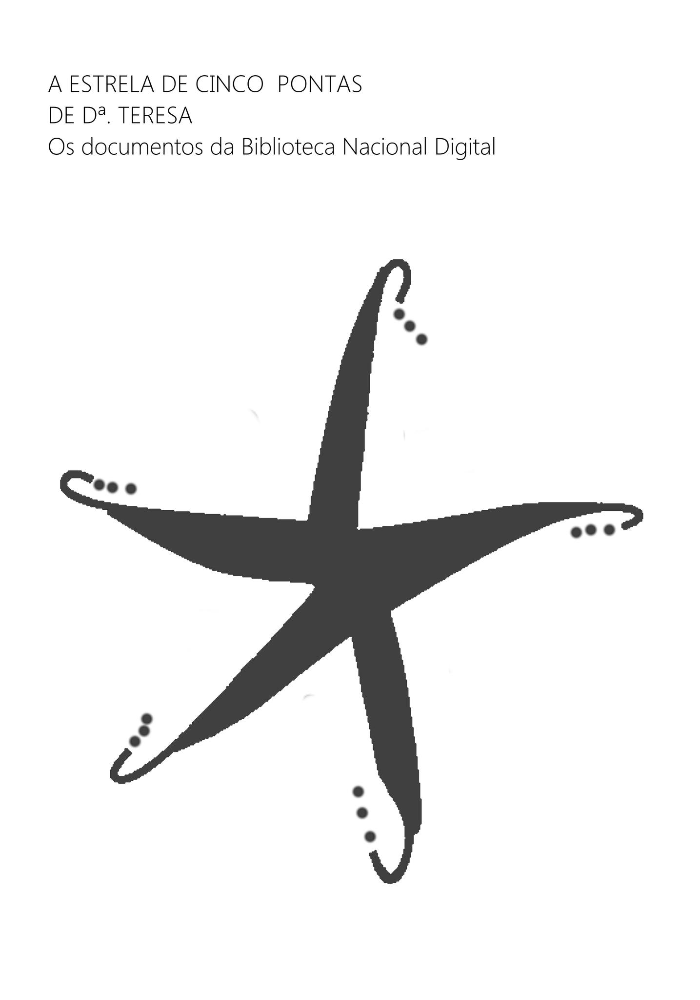
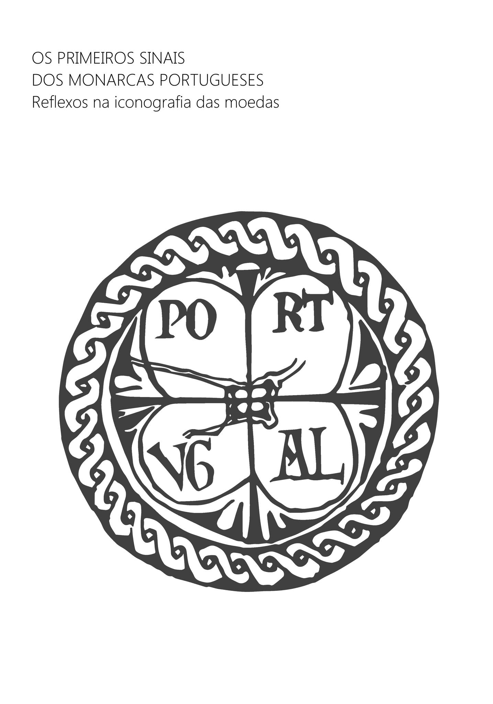
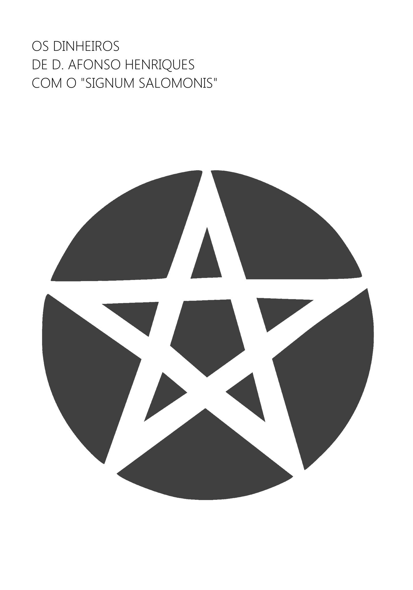

A PORTUSCALLE NUMISMÁTICA NA CRISTA DA PÓS-MODERNIDADE Eu sei que o tema pode fazer confusão a um certo sector da tradição de qualidade, mas não consigo deixar de me pronunciar sobre ele com moderado interesse. Ao…
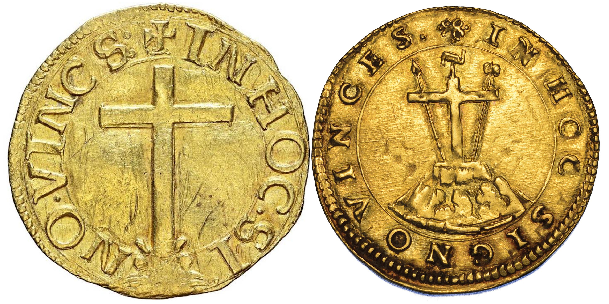
À esquerda, um calvário de D. João III e, à direita, um calvário de Afonso D'Este, duque de Ferrara. Os interessados na numária moderna hão-de um dia estudar qual imita qual. Na cruz de Afonso D'Este a significação…

EBOOK EM PDF As primeiras moedas de ouro do rei formoso The first gold coins of the handsome king Bilingual PT ENG
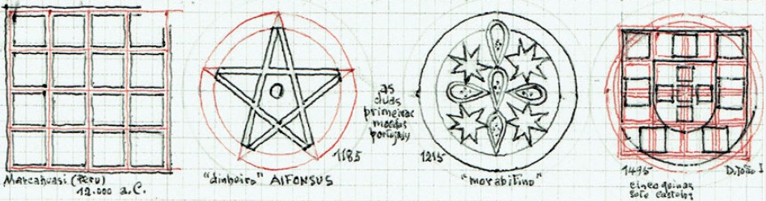
Desenhos de Almada Negreiros. A geometria que Almada leu painel comecar

O QUE É A NUMISMÁTICA? Em 1975, Philip Grierson, o mais reputado estudioso de sempre da numismática medieval, iniciava a introdução do seu fundamental "Numismatics" com os seguintes dizeres, que tomámos a liberdade de…

O NASCIMENTO DE UM REINO Indagar acerca dos paralelismos que existem entre o nascimento e a ressureição é o mesmo que tentar compreender os nexos gerados entre os 4 evangelhos e o Apocalipse. Em ambos existe uma virgem…

CRISTO É AMOR A frase podia ser retirada de um daqueles programas da tradição de qualidade, tipo 70x7, ou estar aposta no placar luminoso de um centro paroquial ou de uma loja de parafernália católica. Podia até ser…

AS SERPENTES Na primeira imagem (Biblioteca Britânica, Royal MS 13 D VI, fólio 61v, segundo quartel do séc. XII) pode-se ver uma inicial historiada que retrata um episódio do êxodo, em que Deus pôs à prova os fiéis,…

ENGENHARIA SEMIÓTICA A engenharia acima expressa é uma engenharia que engerminou no círculo intelectual da ANP, antigo Clube Numismático Português, e que juntou toda uma geração de senhores que criaram escola, a qual…

A ROTAÇÃO NA PERSPECTIVA MEDIEVAL Ferraro Vaz tinha já alertado para a possibilidade de interpretação dos sinais afonsinos por via da rotação da imagem. Com efeito, facilmente se transformam cruzes templárias em cruzes…

A ÁRVORE DA VIDA Ao longo dos próximos tempos a Resistência Numismática vai-se dedicar à partilha de imagens retiradas de capitulares de manuscritos do século XII, procurando realçar as referências ao divino, para que…
A árvore da vida de Malick a Pastor
O DIVINO NA ICONOGRAFIA DO SÉCULO XII Estes são três textos de uma trilogia que versa o divino, enquadrado no conceito da árvore da vida e de todas as ramificações iconográficas e iconológicas que dela despontam. Os…

(DUPLOS) BÁCULOS, COM E SEM DUPLA VOLUTA A arte medieval leva a simplificação, a abstracção e a estilização a pontos que requerem o conhecimento de modelos. À esquerda, dois báculos do século XI, o de cima alemão e o de…

O BÁCULO DE SÃO ROSENDO São Rosendo, personagem do século X galego, nasceu em Santo Tirso, no ano de 907 e, sendo descendente dos monarcas leoneses, ascendeu ao cargo de bispo, sendo canonizado pela primeira vez em…

Julgo que em breve os subscritores receberão em casa a edição da Revista Moeda deste mês, com uma capa bem sugestiva do universo dos temas abordados. Nesta edição consta um artigo meu, muito extenso, eventualmente…
A ESTRELA DE CINCO PONTAS DE Da TERESA Os documentos da Biblioteca Nacional Digital
A ESTRELA DE CINCO PONTAS DE Dª. TERESA - NOVO ARTIGO A edição de Dezembro da Revista Moeda há-de estar a chegar aos subscritores, mais dia, menos dia. Nela virá publicado o meu evangelho mais denso sobre a génese da…

OS TRÊS A associação dos três pontos ao divino não se esgota no scutum fidei. É omnipresente na arte cristã. Julgar que se pudessem decorar vestes ou outros motivos com agrupamentos de três pontos, sem que essa escolha…

Apresenta-se um trabalho feito, em co-autoria, por mim, pelo Ludwig Ramacher e pelo Manuel Mozo Monroy. É uma edição bilingue (pt/ing) com três capítulos: "O inventário das dobras e meias dobras pé-terra"; "A…

A Resistência Numismática deseja boas festas a alguns dos seus leitores e oferece-lhes uma capitular de um manuscrito Alcobacense da época da fundação da nacionalidade. O ´seculo XII é, de um ponto de vista artístico,…
entrevista a manuel mozo
Uma entrevista a um dos maiores autores da numismática medieval espanhola, Manuel Mozo Monroy. Vale a pena ler e conhecer o percurso do autor e a forma como vê o panorama da numismática em Espanha. "Você não pode ser um…
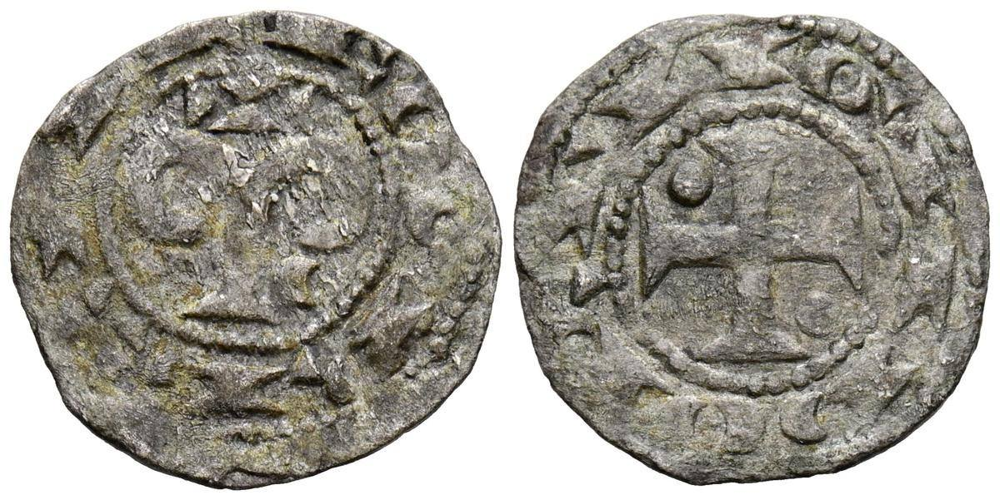
Um excelente exemplar que também vai à praça proximamente, para comparação.
Ler no Estudo Geral UC
Em 2022 dizia-se que tinha aparecido uma moeda de D. Afonso Henriques junto ao coração de um cadáver: alcacer do sal achados ineditos no panteao dos mestres de santiago escavacoes alcacer sal revelam sepulturas vf Em…
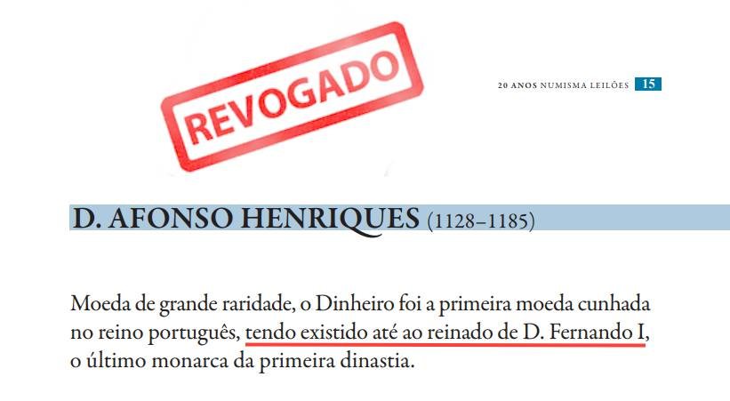

O DISCÍPULO DO SENHOR PROFESSOR RUI CENTENO Parece que finalmente irão aparecer as tão esperadas teses sobre a moeda medieval portuguesa. E isso é um assunto que me alegra, independentemente da génese das mesmas se dar,…
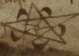
Sinal de Estevão Pelágio, prior do Mosteiro de Roriz (século XIII). "Hoc signum meum", "manu propria". O sol e a lua. As cinco chagas de Cristo. O sinal aparece em vários documentos (vg. PT/TT/MSPR/M001/26,…
"Avemos por bem , e damos luguir a quem quer que tever prata, e á trouxer aas cafas das noías moedas, que livremente a pofà laVrar ém efta dita moeda que ora mandamos que fe laVre , paguando os cuftos do lavramento , e…

ILUMINURAS DOS CÂNTICOS DE ROTSCHILD Flandres, 1300-1350 Biblioteca da Universidade de Yale Beinecke MS 404 Fólios 39r, 41r, 78r, 82r e 97r. A iconografia medieval está cheia de signos polissémicos, que ajudam à…
Vale a pena seguir a página da GMBH. Aí estão as superfakes por fundição, com rachas no bordo, estrias de fluição do metal e poros e empastamento mínimos. Há muito que me faziam confusão as levadas de alguns leilões…
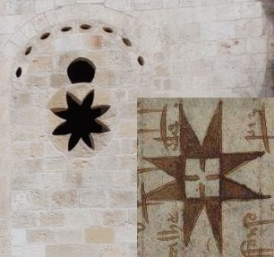
Ainda outro sinal do ANTT (1294), da mesma denominação (sinal de tabelião em forma de estrela), junto com um óculo da igreja de São Pedro, em Antioquia. A fachada da igreja foi construída pelos primeiros cruzados, a…
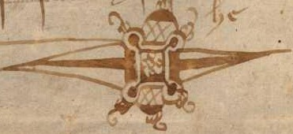
Alguns sinais referenciados no ANTT como "sinal de tabelião em forma de estrela". Séculos XIII e XIV.
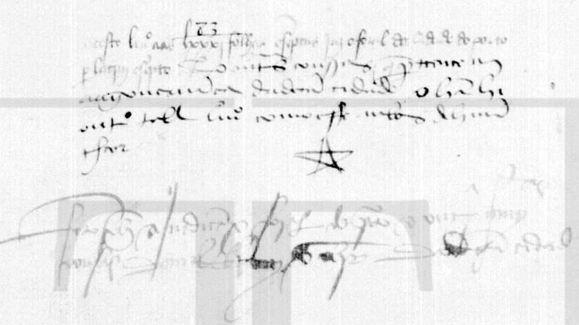
Um pentalfa na chancelaria de D. Afonso IV.

D. AFONSO V LAVROU MOEDA EM CEUTA Está para mim cada vez mais claro que os ceitis com letra C foram efectivamente lavrados em Ceuta. A confusão esteve sempre toda no "A", que hoje já não é confusão para ninguém e que…
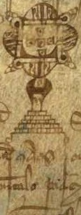
1355 - Sinal aposto na concórdia entre D. Afonso IV e D. Pedro, após a morte de Inês de Castro.
Ler no Museu do Dinheiro
Um podcast muito interessante do Museu do Dinheiro. Gostei de ouvir o discurso da técnica de restauro do museu, que parece revelar uma inversão na política de conservação e restauro das peças. Alturas houve em que o…

UMA QUESTÃO FERNANDINA Há uma série de tempo fui contactado por um agiota científico para lhe fornecer fotos de dinheiros de D. Fernando, da minha colecção, para estudo. Forneci-lhe as fotos, os pesos e os diâmetros,…
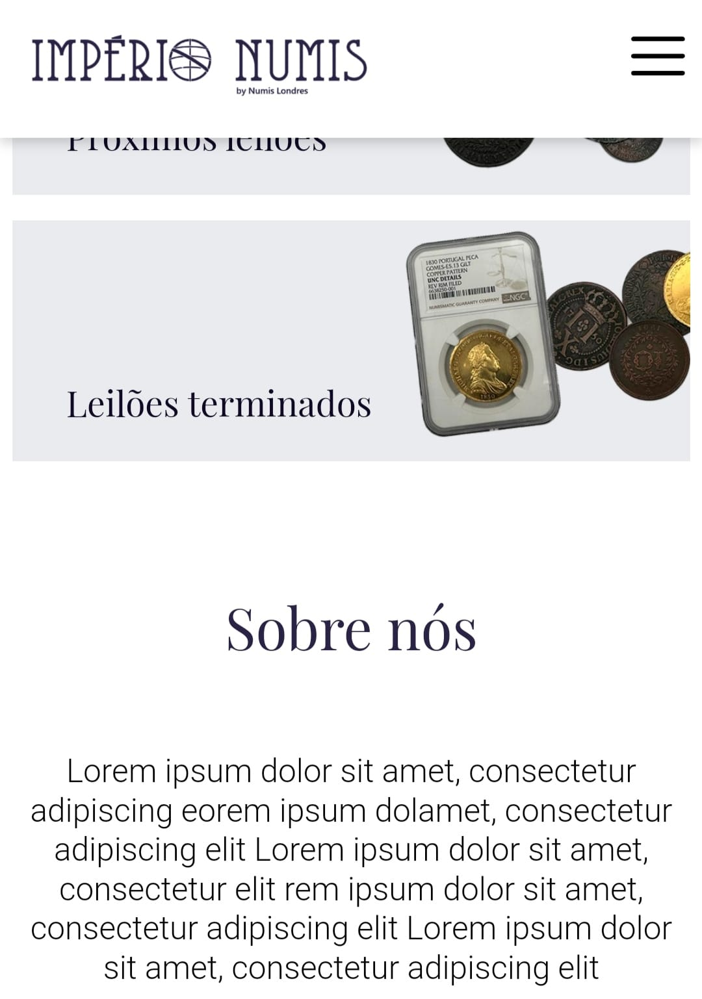
Da série da publicidade gratuita, andei a espreitar os leilões do Império e fiquei deliciado. Tinham um vídeo espectacular, que parecia um trâila, cum'os do Lauro Antonio, e até têm o "sobre nós" escrito em latim. E não…
REFLEXÃO SOBRE O FUTURO DOS ESTUDOS DE NUMISMÁTICA A ordenação epigráfica das espécies, no futuro, quem a vai fazer é a inteligência artificial. Introduzindo o formato dos punções num algoritmo, com maior ou menor…

Um cruzado de D. João III do gabinete de Numismática da Universidade de Göttingen, na Almeanha. A colecção principal, da qual esta moeda também fazia parte, foi comprada em 1773 ao professor de história natural e…
O ENG. RUI TORRINHA E AS MEDALHAS Conheci o sr. Eng. Rui Torrinha na ANP. Foi-me apresentado pelo sr. Rui Monteiro, quando alguns senhores da ANP decidiram, quase a final, participar com as suas colecções na minha…

PUBLICIDADE GRATUITA Às vezes fico a olhar para os dizeres dos catálogos de leilões com um certo espírito de intriga. Os bons leiloeiros teriam por apanágio a virtude de esconderem pérolas do conhecimento por entre as…
OS ESCUDOS DE D AFONSO V DE LISBOA E DO PORTO
Este estudo estava feito há algum tempo e em fila para publicação. Como entretanto a fila para publicação se avolumou, é preciso ir despejando os artigos em algum lado. É o inventário mais completo que consegui fazer e…
"(...)pues los antiguos acostumbraban a pesar el dinero más que a contarlo(...)"
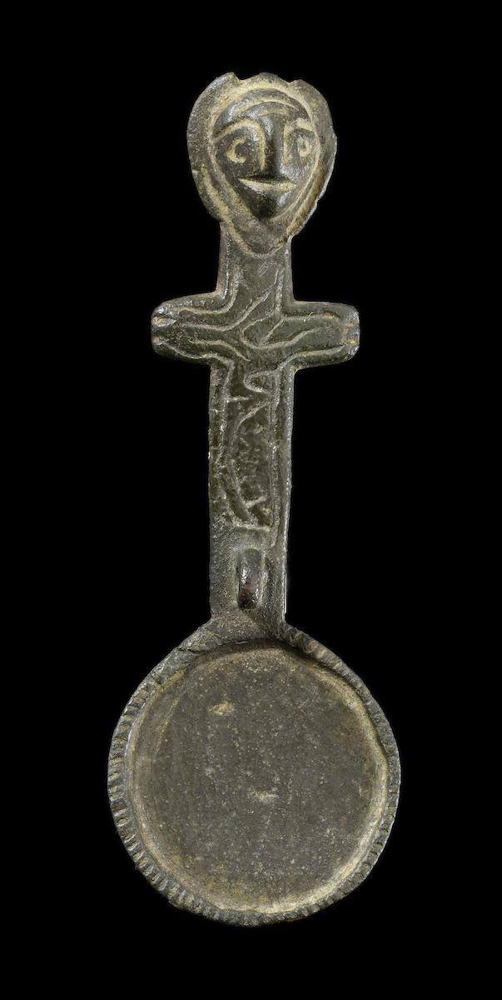
O que resta de uma balança para pesar moedas do século VI. Museu Britânico.
Dei com esta imagem no computador. Resume a resolução de um enigma que durou séculos. Havia até quem dissesse que um dos pontos era Arzila, o outro Álcacer e o outro África. Assim de respente, tudo o que se escreveu…

O que a mim me espanta, nem é o Afonso Henriques das estrelinhas sair por 3,8k. É mesmo ver um leiloeiro, introdutor de falsificações no mercado de modo consciente, a criticar publicamente outra casa leiloeira. Sr.…

O Internet Archive, juntamente com o portal Gallica, são actualmente, na minha opinião, as duas maiores maravilhas do mundo no que ao conhecimento diz respeito. O futuro do conhecimento está nas novas portas que a…
Hoje fui à biblioteca da Academia das Ciências consultar a obra do padre Avelino Costa, que muito contribuiu para o conhecimento da história de Portugal. Sempre que houve guerra, lá foi a prataria ao cadinho. Coisas…

OS DINHEIROS DE D. AFONSO HENRIQUES COM O PONTO E O CRESCENTE Há uns anos largos que tenho esta imagem guardada no computador. O dinheiro do canto inferior direito passou-me pelas mãos e é autêntico. Se tem o crescente,…
Visitar educast.fccn.pt
Uma entrevista ao Eng. Trigueiros em 2002 sobre a história do escudo. Essencial para os interessados na república. Visitar educast.fccn.pt

Este é um excerto de um artigo de 2021, intitulado "A eloquência duma moeda", e escrito pelo senhor professor José D'Encarnação". Como habitualmente, vê-se expressa a ideia da desvalorização da apresentação de catálogos…

A revista moeda deste trimestre, ao que sei, começou a chegar a casa dos subscritores. Este mês consta um pequeno artigo meu sobre um tema que fez Batalha Reis e Raul Couvreur chegarem à tréplica. Com este meu artigo…

Um exemplar que ficou esquecido no trabalho que publiquei sobre os dinheiros com o "signum salomonis". Uma falsificação proveniente do leilão 46 da Numisma.
Ler no Arquivo Nacional
Ler no Arquivo Nacional
Em Abril de 1912, estes foram os esclarecimentos dados sobre a colecção de moedas do Palácio da Ajuda.
Dica de investigação para setubalenses com índole mesteiral.

O sinal da esquerda é um original de D. Afonso Henriques, aposto num documento de 1144 (PT-TT-MSML-CE03-16). É talvez o mais cuidado de todos os sinais não rodados do rei fundador, motivo mais que óbvio para ter sido…
Excerto de estudo da composição elementar da chave de Santo Humberto, que enuncia um axioma, aparentemente desconhecido pelos estudiosos dos metais nas universidades portuguesas.

Aqui há uns anos, quando coloquei pela primeira vez a hipótese de existirem ceitis falsos da época, fui alvo da risada dos intelectuais dos ceitis, grupo socio-numismático no qual nunca estive inserido. Já tinha passado…

Em 1497 os reis católicos aboliam o bolhão na Pragmática de Medina del Campo. Antes disso, em 1488, Carlos VIII de França interditava o curso de bolhão estrangeiro em França. E, antes disso ainda, no ano de 1485, D.…
Ler no SciELO
Tem-se feito boa história monetária do período moderno português no Brasil. Já conhecia o estudo sobre a restauração e li hoje o artigo relativo a D. António e aos Filipes. A sorte de Portugal é a lusofonia. Ler no…
SpotifyDobra Pé-Terra de D. Fernando I (1367-1383)Áudio no Spotify
SpotifyDobra Pé-Terra de D. Fernando I (1367-1383)Áudio no Spotify Para quem anda afastado das melhores tendências musicais, uma faixa de Gouveia, featuring INCM, revolução de Avis ultramix 2021, edição pandemia. Áudio…

Há uns 10 anos, numa noitada em minha casa, tive que aturar um caro amigo numismata a debitar conhecimento sobre chinfrões, invocando a falsidade de todo e qualquer exemplar cujo florão da coroa cortasse a legenda. "Não…

Relativamente ao forte de D. Fernando, sou agora avisado que andam a usar o meu nome para justificar a autenticidade da moeda. Ora, convém esclarecer a situação, até porque terá sido aproveitada de modo muito baixo,…

Este segue gratuito. Se o imprimisse, face à "damnatio memoriae", cá ficaria com as cópias em casa, para um dia queimar numa fogueira de vaidades. Até lá, sei que será muito consultado. Os dinheiros de D Afonso…

Há pelo menos 5 anos que deixei de ser coleccionador de moedas e passei a ser ajuntador. Não sou bem um ajuntador sem critério, porque ainda conservo uma ideia da composição do ajuntamento. Mas é cada vez mais abstracta…

Aquela estrela junto à espada tem muita importância iconográfica. Vilipendiá-la é um acto vistoso, que até pode gerar cunhos desconhecidos. Há quem vá mais longe e diga que é extremely fine. O filósofo do enchido…
for metal detectorists
Se todos os países Europeus aderissem ao exemplo dos países nórdicos e se criassem bases de dados dos achados feitos com detectores de metais, ficávamos com um índice quase imediato do fluxo de comércio com cada um dos…
Visitar unimus.no
Visitar unimus.no Esta é a base de dados Norueguesa de objectos arqueológicos: Visitar unimus.no É curioso perceber que só aparecem moedas portuguesas a partir do século XVIII. E isso talvez seja uma evidência a estudar…
Em 1952 esta era a interpretação que Batalha Reis fazia da iconografia dos dinheiros de D. Afonso Henriques, que hoje chamamos de duplo-báculo ou cruz de âncora. Não sei se estão a perceber os dois grandes olhos da…
A arte bárbara faz uso da estilização e da abstracção de um modo que só viria a ser compreendido no séc. XX. Tanto podia ser uma moeda dinamarquesa do século IX, como um quadro do Chagall.
Uma excelente análise do panorama numismático na arqueologia, feita por duas investigadoras, das universidades de Frankfurt e Estocolmo. Ao contrário do pensamento dominante em Portugal, segundo o qual apenas os…
Em cima, o único exemplar original que encontrei de uma moeda raríssima, a meia peça da Baía de 1783. Em baixo, outro exemplar. Primeiro, numa foto com classe, que quase parece tirada à medida da ocultação do penteado.…
Quando um caco todo martelado sobe de 20k para 120k, percebemos que afinal a numismática não está irremediavelmente perdida e que ainda existem coleccionadores versados em algo mais do que a avaliação do rasto do pneu.
O COBRE DOS CEITIS Existe a ideia consolidada de que o cobre das amoedações portuguesas que não vinha das minas de Aljustrel, viria do Norte da Europa. Mas esse cobre, o do Norte da Europa, chega já no séc. XVI, por…
Caro Juan Santos, não é só triste a sua absoluta falta de conhecimentos sobre numismática. É triste sobretudo a sua falta de educação e a sua postura de um modo geral. Deste lado não há ninguém a fazer-lhe mal nenhum…
AS SUPERFAKES CHEGARAM À CUNHAGEM MANUAL PORTUGUESA? O assunto não é novo, a não ser para os mais desatentos. A lei de Murphy, essa, dá-nos a certeza de que o fenómeno teria que acontecer. Há uma certa ingenuidade nos…
E ainda deixo mais esta, só para perceberem o cunho de anverso da D. Luiz. E para perceberem que todas as três moedas têm os escudetes com a dupla batida e a recentemente aparecida não tem. Coincide, no entanto, nas…
Agora outra. A foto da moeda da esquerda está inclinada, daí a aparente micro-inidentidade. De qualquer modo, basta olhar para as posições relativas. Se os especialistas estranham a epigrafia das moedas da colecção do…
Eu não devia facilitar o trabalho a ninguém, nem tornar claros certos aspectos que, para serem claros, precisaram de muitas horas de estudo. Acho de uma ingratidão tremenda a atitude de certas pessoas da nossa…
UM INVENTÁRIO DOS FORTES E MEIOS FORTES DE D FERNANDO
Tinha este artigo pronto há dois dias e decidi publicá-lo no imediato por motivos que explicarei de seguida. Com efeito, o surgimento no mercado de novos exemplares do forte de D. Fernando apenas pode ser…
No último artigo que escrevi sobre as moedas de D. Fernando, indiquei que suspeitava, há já algum tempo, que o gentil do Porto podia ter sido intervencionado. Hoje descobri a prova e dissipei as dúvidas de uma vez por…

Este é o justo de D. João II que, segundo António Trigueiros (a quem roubei a foto), pertenceu à colecção da biblioteca da Universidade de Leyden (hoje integrada na colecção do Banco da Holanda). A proveniência,…

O Português de D. Manuel era a moeda de ouro mais pesada do mundo. Valia dez ducados e era aceite e reconhecida em todo o lado, como nos testemunha este achado, feito na Holanda, no ano 2000.

Nos países protestantes, tradicionalmente mais liberais e menos providenciais, há muito que se optou por um modelo de regulamentação do detectorismo, com criação de plataformas para registo dos achados. A solução do…

Em 28 de Otubro de 1898 era publicada, no jornal francês "Le Publicateur du Finistère", a notícia de um achado de 6 cruzados de ouro de D. João III, a dois metros de profundidade, nas ruínas dos alicerces de uma casa…

O indivíduo na imagem chamava-se Philippe Ferrari, era filho dos últmos duques de Galiera, e foi um dos coleccionadores que conseguiu elevar o transtorno obsessivo-compulsivo a expoentes inimagináveis. Antes de morrer,…

Na segunda metade do século XIV, enquanto em Portugal ainda predominavam as representações góticas, bidimensionais e altamente estilizadas, noutras partes do mundo ocidental já se fazia uso de um gótico tardio,…

Na colecção de Charles Sabine Augustus Thelluson, formada entre 1859 e 1885, e vendida em 1931, existiam 5 moedas portuguesas. Um morabitino de D. Sancho I; três peças, de 1833, 1834 e 1835; e um raro São Vicente RP, de…
a major modigliani forgery scandal hits italy
As falsificações têm-se tornado cada vez mais omnipresentes no mundo da arte e das antiguidades. O exemplo da notícia abaixo podia ter paralelo numa exposição de moedas que ocorreu no Minho aqui há uns anos. Era olhar…

No século XVI a moeda portuguesa corria pelo mundo e era comummente aceite como meio de pagamento. Por isso mesmo, dela se lavraram inúmeras imitações, como é o caso deste cruzado, emitido por Guilherme V de Batemburgo.…

Uma casa da moeda no século XV Biblioteca Nacional de França ark:/12148/btv1b525133359
Resistência Numismáticafacebook.com
Pragmática de Medina del Campo (1497) “que ninguna moneda de vellón quier sea de nuestros reinos, o de fuera de ellos, que no valga por precio alguno” Os sinais da entrada dos sistemas monetários na época moderna.


Resistência Numismáticafacebook.com A roda da fortuna é uma representação muito vulgarizada ao longo da idade média, sendo que o conceito existe já no tempo dos romanos. A Fortuna representaria talvez uma combinação da…

Estou há dois dias a pesquisar moedas de Henrique IV, de Afonso de Ávila e dos reis católicos. Já tinha perdido umas horas no passado a fazer o mesmo exercício, por mais que uma vez. Tudo para dizer o seguinte: Escrevi…

Mas anda tudo maluco?!? Agora o Manuel Mozo Monroy cataloga o escudo de ouro falsificado da Lanz, saído em 2002?

O justos e os espadins foram inicialmente lavrados para serem enviados numa embaixada ao papa, ocorrida em 1485. Essa embaixada era decisiva para o futuro do país. Não só se procurava justificar a "limpeza social"…

As estampas antigas podem, por vezes, ser muito enganadoras. Aqui o exemplo do chinfrão do Museu de Copenhaga. A morfologia dos escudetes e a tipologia da legenda (ALFONQ/REIS - AIVTORIVM) mostram claramente que a moeda…
Ler no OpenEdition
Um artigo muito recente e muito bom para compreender melhor os ensejos feudais do Condestável Nuno Álvares Pereira. Percebe-se que as querelas com o rei foram intermináveis, com a necessidade constante do monarca…

Não sei se alguma vez partilhei isto. Nem sei já para que efeito me dei ao trabalho de fazer estas coisas, ou quando foi sequer. Devem ser elementos de estudo de sei lá o quê. Pode ser que interesse a alguém.
A circunstância mais importante que marca o início da modernidade monetária tem que ver com a estabilidade das ligas. As moedas modernas não são apenas aquelas em que se repristinam letras latinas e se alcança uma…

Para que fique claro: 1-O estudo do senhor professor Rui Centeno sobre os justos, para lá do que decalcou dos meus artigos e dos de Canto Garcia, é um emaranhado pedante de raciocínios completamente escusados e baseados…

Há duas moedas, aparecidas nos últimos anos, que podem ser o sinal mais claro da morte da numismática. Sobre essas duas moedas, não há nenhum "especialista" a comprometer-se com palavra nenhuma, excepção feita ao engº…

AINDA SOBRE A QUESTÃO DA EVOLUÇÃO DA NUMISMÁTICA EM PORTUGAL Em Março de 2014, a SPN, presidida pelo Sr. Professor Rui Centeno, o indivíduo mais qualificado na nossa numismática, anunciava, com pompa e circunstância, na…

Este é o justo de D. João II que foi encontrado nas escavações da Casa do Infante. Havia muitos estudiosos que, por esse motivo, acreditavam que esta fosse uma emissão portuense sem letra monetária. Muito evoluiu a…

Tenho especial interesse pelo chinfrão, até porque fiz um estudo sobre ele. Continuo a ver as coisas que saíram nos últimos dois anos, que não acompanhei. A equipa de estudiosos da Portuscalle Numismática não para de me…

Andava aqui de volta de uns catálogos e encontrei esta preciosidade do ano passado, com três lotes levados à praça no mesmo leilão. Suponho que se traduza assim: Com penteado discreto-300 euros Sem penteado-0 euros Com…

Um São Vicente de D. João III
Ver no YouTube
Ver no YouTube Ver no YouTube A obra "numismatique antique et médiévale en occident" de Georges Depeyrot, é um dos trabalhos fundamentais para perceber o período monetário que vai desde o final do império romano até à…
O estudo da numária medieval primeira (dinheiros velhos e novos) presta-se a tiques completamente distintos do estudo da numária medieval segunda (a que vai de D. Fernando a D. João II) e da numária moderna (a que…

A moeda da esquerda foi posta no mercado pelo sr. José Almeida. Classificada como MBC, sem qualquer menção adicional para lá do preço. É aplaudida pelos correlegionários. O coração do sr. Alberto Praça e o polegar do…
Tenho visto por aí a apologia da não limpeza das moedas, vulgarizada e hasteada em bandeiras ocas e desprovidas de reflexão prévia. Há já até quem teça elogios a moedas, epitetando-as de virgens, só e apenas porque…

OS ESPADINS DA PORTUSCALLE NUMISMÁTICA - PARTE II Na altura em que comecei a estudar os espadins, o Sr. Alberto Silva, amável como sempre, disponibilizou-me fotos de alguns exemplares que tinha em carteira juntamente…
Então não é que o putativo real da rosa, sob o epíteto de estar fotografado e descrito no meu livro, subiu de 90 para 1500 euros? Os meus estudos foram de facto um golpe muito baixo em certas ambições comerciais. Que me…

OS ESPADINS DA PORTUSCALLE NUMISMÁTICA - PARTE I Os falsificadores de moedas e aqueles que introduzem as falsificações no mercado têm traços característicos e comuns, que os anos de experiência me têm levado a…

Aqui há uns anos, quem quer que se atrevesse a dizer que os dinheiros de cruz cravada eram de D. Sancho II, certamente seria contrariado por argumentos de erudição obscurantista, tomados como inabaláveis, e ancorados…
PEQUENO APONTAMENTO ACERCA DA QUESTÃO DA EMIGRAÇÃO DAS MOEDAS VIRGENS
DA CENSURA NA NUMISMÁTICA PORTUGUESA Porque somos pós-modernos, começamos por citar a infopédia: "A censura é um instrumento usado por regimes totalitários para impedir que a imprensa e outros meios de difusão de…
Ver no YouTube
A Resistência Numismática deseja a todos os leitores uma excelente quadra festiva e uma grande entrada em 2024! Ver no YouTube
Uma conversa sobre numismática medieval portuguesa com o Chat GTP. Isto é de facto uma inovação enorme. Está já ao nível do actual fórum de numismática, mais coisa menos coisa. User Hey ChatGPT Hello! How can I assist…

A cunhagem mecânica também frequenta os salões de cabeleireiro. Às vezes parece que isto são tudo obras feitas por carolice e devoção à causa do rejuvenescimento. Servirão sempre dois propósitos. A pedagogia dos…

Às vezes fica-se a olhar para uma moeda algum tempo. Ora porque nos deslumbra, ora porque alguma coisa, à primeira vista, não bate certo. Neste dinheiro salta à vista o contraste entre o estado de conservação dos…
Os pulos e os avanços da numismática medieval e moderna em Portugal 2013 2022
Quando comecei a estudar numismática de modo sério, não havia praticamente ninguém a fazê-lo em Portugal. Nessa época, alguns autores, tais como o senhor professor Rui Centeno e Mário Pastor, queixavam-se…
Breve apontamento acerca da actualidade do Fórum de Numismática O Fórum de Numismática cumpriu durante muitos anos o papel de espaço público dedicado à partilha de conhecimentos e ao agregar de uma comunidade. Foi…

De entre as peças portuguesas que foram registadas no Portable Antiquities Scheme no último ano, esta foi a que mais me chamou a atenção. O registo é de Janeiro de 2023 e o local do achado é na região de Londres.…
O escudo de Toro de D Afonso V
A actualidade numismática mundial está marcada pela falsificação das proveniências, sobretudo desde o caso da moeda de ouro dos Idos de Março. Neste artigo tenta-se a inventariação dos exemplares conhecidos do escudo de…
As meias dobras pé terra de D Fernando
As meias dobras pé terra de D Fernando
british auctioneer coin sale fraud new york richard beale
Timidamente, a notícia sobre a detenção de Richard Beale ( british auctioneer coin sale fraud new york richard beale ) foi divulgada em Portugal, nomeadamente no Fórum dos Numismatas. Do que não se fala, sendo isso uma…
Tenho muitos textos em arquivo que podem ter o maior interesse para a numismática portuguesa. Este, acabei de o escrever hoje. E sinto que o devo publicar: "Ego??? Oh homem, eu tenho a minha auto-estima toda destruída.…
Como deve ser sabido, fartei-me de falar para numismáticos, exercício muito semelhante a um jogo de squash, em que a bola retorna pejada de perigosas lâminas. Ainda assim, dado o ultraje que consta no Fórum de…
Espadins saídos da terra um enigma decifrado
Espadins saídos da terra um enigma decifrado
GUIA PARA O COLECCIONADOR DE MOEDAS
GUIA PARA O COLECCIONADOR DE MOEDAS
A mão de Deus nas moedas de D Afonso V e D João II
Caríssimos, Estou muito farto e muito cansado de trabalhar. Na verdade, não preciso disso para nada, se não me der prazer. E deixou de dar. Paulatinamente, temas que me apaixonavam passaram a transmitir-me azedume. Por…

Na última semana liguei pouco ou nada a moedas. A toada deverá continuar, que o resto está bem entregue à tradição de qualidade. Hoje, no entanto, abri a página do Fórum dos Numismatas, coisa que já não fazia há um mês…

O morabitino lascado falsificado volta a aparecer, desta feita na Stack's. O preço é agora convidativo e a moeda até vem certificada pela NGC. Aliás, as letras e o desenho são mesmo "quase iguais". Não fossem os cunhos…
Visitar theportugalnews.com Já foi vendido o português de D. Manuel encontrado em Inglaterra, cujo achado foi amplamente noticiado. €18.000, para um comprador do Japão. Dizem os especialistas que a marca de cambista…

Um real de 3 libras e meia dos de bom bolhão, encontrado em Fribourg.

Um artigo publicado no "The numismatist", em 1909, acerca de uma peça que hoje está classificada no catálogo Alberto Gomes como fantasia/falsificação, na secção de Filipe I.
Fui parar ao catálogo da Numista por acaso e dei com uma série de fotos que merecem ser analisadas. Não é só a questão do evidente mau gosto do "restauro digital", mas sobretudo a vandalização do estilo, que me faz…

WELCOME TO THE TWILIGHT ZONE Quando li o Admirável Mundo Novo e o 1984, ainda existia um pensamento grupal que via as utopias negras como cenários nefastos e indesejáveis. Hoje em dia vivemos essas coisas. Alguns até as…
Daqui a umas horas vai à praça esta condecoração, que nos mostra a original iconografia da Torre e Espada, quando foi alegadamente reinstituída no século XIX. O contexto da reinstituição é o das invasões napoleónicas. É…
Estava aqui a ouvir o som dos passarinhos e aventou-se-me um axioma: "Se foi limpa já não pode ser soberba". Um dia destes publico um artigo a esmiuçar o assunto. Não há fartura que não dê em leitura!
Esta moeda saiu na numismática leilões há cerca de uma semana. Entretanto tenho sido inundado de mensagens a perguntarem-me se é uma boa moeda. E até já se levantam hipóteses de ser falsa de época. Para que conste, a…

Sempre se disse que eram conhecidos 3 escudos de D. Afonso V de Lisboa. O do BES, o do MCM e outro, cuja foto está no catálogo Alberto Gomes. Na Revista Belga de Numismática de 1861 aparece a estampa de outro, que…

Este é um dos ceitis de D. Afonso V mais bem compostos da colecção do Museu da Casa da Moeda. Já pertencia a D. Luiz e mostra, no letreiro. a titulatura de Senhor de Ceuta (CEPTE DOMINI). Tem uma epigrafia certamente…
Ler no Internet Archive
Ler no Internet Archive No que toca a digitalizações de livros de bibliotecas públicas, até na Índia já vão mais avançados que nós. Ora vejam bem a afronta que é disponibilizar a Numária de D. António em pdf. Espero que…
Vamos lá esclarecer uma questão, não vá a inexperiência de uns e a ignorância de outros construir verdades erradas. Há uns anos analisei uma série de reais brancos de D. Duarte, que deveriam servir de matéria prima a um…

O coleccionismo de moedas, no que tem de bom, pode-nos levar a percorrer estilos, culturas e histórias. De qualquer campo se pode partir para o todo, e as moedas, reflectindo esse todo, naturalmente trazem uma outra…

O leilão da Numisma está a decorrer ainda, mas já vai no reinado de D. João IV. Os preços mantêm-se e o interesse pelas marteladas continua alto. Até os chinfrões de açor duplo são disputados. 🐥

Encontrado na Holanda com detector de metais. Moedas do século XII ao século XIX. A moeda portuguesa é um real e meio de módulo menor de D. João IV e está incorrectamente identificada como 5 reais de D. Sebastião.…

Um selo de D. Afonso V, da colecção do Museu do Louvre. A letra é gótica minúscula angulosa. A datação deverá ser anterior a 1460, visto que a titulatura apenas comporta ainda as menções de rei de Portugal e do Algarve.…

As moedas da esquerda já estavam referenciadas como falsificadas, mas as da direita não. A letra é "quase igual", mas não é igual. O pormenor mais assustador nestas falsificações é a explicação de toda a iconografia do…

Da lavra de Javier Salgado e João Pedro Vieira.

Teixeira de Aragão também escrevia notas de rodapé.
county durham metal detectorist unearths rare gold coin valued at up to 30000
Mais notícias acerca do português de D. Manuel encontrado há cerca de um mês em Inglaterra: county durham metal detectorist unearths rare gold coin valued at up to 30000

Julgo que este será o primeiro "tratadeco" acerca dos contos para contar, escrito pelo Abade de Castro, em 1844, na revista "O Panorama", dirigida por Alexandre Herculano. Na altura o estudo destas peças ainda se…
Já tinha publicado esta foto há uns anos, com algumas limpezas que fiz. Julgo que seja pedagógica. A ideia enraizada na tradição de qualidade dos numismatas é a de que as moedas não se limpam. Diz-se a frase em tom…
Cheguei há pouco a casa e, no correio, para lá de um real branco, tinha a revista moeda. Gostei muito de ler o artigo do Eng. Trigueiros sobre as moedas "proof-like" no reinado de D. Luís. Desmistifica uma série de…

Não sei se alguma vez publiquei estas coisas, mas não tenho ideia disso. São elementos de estudo.

Corrosão (à esquerda) e poros de fundição (à direita), vistos ao microscópio. (Elementos de estudo)

Um clásico de Luis Pinto Garcia. Verdadeiro manifesto anti-numismotafa, que nunca é demais lembrar, e que encontrei perdido nas minhas pastas.

Ainda sobre dnheiros e mealhas (óbulos), uma imagem perdida no computador. Em cima, a comparação entre um óbulo e uma pite. E em baixo, dinheiros em comparação com óbulos. O assunto está longe de ser consensual ou de…
Dei por mim a olhar para este real de D. João I com alguma curiosidade. Parece ter um sinal oculto à direita da coroa, mas não passa de uma ilusão. É uma mera roseta sem âmago deslocada do remate do vértice dos arcos.…
Um contributo para o Santo Ofício Tenho lido coisas extraordinárias, vindas dos nossos intelectuais da tradição de qualidade dos numismatas. A última foi esta: "Entre os moedeiros sempre existiram regras que, apesar de…

Uma exposição de uma colecção privada, que ocorreu em 2019, no Brasil. Há um português de D. Manuel e muito ouro mecânico. Alguém sabe alguma coisa sobre a colecção? moedas raras estao expostas em uma das maiores…

Na Batalha de Toro, travada em 1476, D. Afonso V vê a sua hoste derrotada, enquanto D. João II contra-ataca e ganha o dia. De nada valeu o esforço, nem a ocupação do campo de batalha, do qual os castelhano-aragoneses…

Uma moeda do Museu Nacional de Arte da Catalunha, de D. Pedro, filho do infante D. Pedro, que após 1455, e na sequência da reabilitação do seu pai, volta a Portugal para participar na cruzada. Depois, nos anos 60 do…

Esta brincadeira vai à praça com um preço base de 15.000 dólares. É um molde para fazer moedas pelo método de fundição e foi alegadamente feito na China, cerca de 100 anos antes de Cristo nascer.

Sobre os dinheiros de cruz cravada, continuam a recair as maiores intrigas, algumas que até já foram esclarecidas no meu trabalho sobre morabitinos e dinheiros velhos e que um certo clube de futebol, à moda de quem…

Ainda a propósito das letras, mais uma nota de rodapé ilustrada: "A recuperação da minúscula redonda, influenciada pela minúscula carolina, dá-se a partir do final do século XIV, em Itália, como reacção à…

Fui à colecção tirar uma foto de três moedas. O chinfrão, com um P gótico anguloso. O ceitil do Porto, com um P gótico redondo, de tendência uncial, ou maiúsculo alemão, como preferirem. E depois um ceitil com um c…

Tinha aqui esta imagem guardada, com a junção das tabelas da epigrafia medieval portuguesa do senhor professor Mário Barroca. Pode ser útil na compreensão dos alfabetos. Quanto à nomenclatura, isto é uma grande…
TRIGUEIROS António Miguel In the 6th centenary of the Portuguese conquest of Ceuta August 1415 2015 Ceutas gold silver and copper ceitis Os ceitis de ouro prata e cobre de Ceuta

Sobre as pretensas moedas de Ceuta, já muito se escreveu e pouco de facto se concluiu com clareza. Deixo algumas palavras do Engº Trigueiros, escritas em 2015, bem como a foto de um "ceitil com c à direita invertido",…

Para quem se quiser dar ao trabalho de compreender "as grandes questões", vamos lá continuar a colocação dos "pontos nos i's", para memória futura, numa exemplificação prática da terceira lei de Newton. E isto está…
Ler no repositório UAB
Ao início parece um filme do Roger Corman, mas depois assume plenamente uma certa portugalidade esquecida, assim ao jeito do Manuel de Oliveira. Se vale a pena ver a Professora Maria José Pimenta Ferro Tavares a falar…
Visitar tresvintens.blogspot.com
Visitar tresvintens.blogspot.com Não conhecia o percurso iniciático do Mestre Vítor Almeida. Dei com ele hoje na net. Fiquei impressionado. Três vinténs à flor de cunho! Visitar tresvintens.blogspot.com

Um pouco de iconografia cristã, para podermos perceber o espadim de D. Afonso V Nesta imagem, encontrada na internet de modo fortuito, pode-se ver uma representação antropomórfica de Deus. Nos cantos, os 4 evangelistas.…
Ler na SP Numismática
Pérolas esquecidas da numismática portuguesa Corria o ano de 2017, quando o Sr. Professor Rui Centeno fez a recensão dos primeiros trabalhos do Mestre Vítor Almeida, revelando, como sempre, elevado espírito crítico: "Na…

Mais dois chinfrões encontrados em Inglaterra (em locais diferentes) durante o mês de Agosto de 2022.

Uma nota de rodapé ilustrada "Muito embora o justo se insira num tipo iconográfico não original, é interessante observar que D. João II também usa a mão direita para segurar a espada (da justiça), a mesma que é…
Visitar google.com
Eu já era para ter postado isto à hora de almoço, mas entretanto adormeci algumas vezes. Foi uma boa tarde a ouvir os recém-descobertos podcasts do Museu da Casa da Moeda. Para quem tem saudades das emissões de rádio do…

Um artigo bem recente da medievalista, que revela o enorme contributo que os senhores da ANP, na sua inestimável erudição e tradição de qualidade, têm trazido ao aperfeiçoamento da numismática e à compreensão da…

O Sr. Professor Rui Centeno, a revelar elevação crítica, já desde 1979: "(...) limita-se a dizer o que há muito está dito (...)".

O "A" dos espadins foi, desde sempre, um dos temas predilectos dos nossos eruditos da tradição de qualidade numismática. Aqui a opinião do Dr. Raul Ferreira Gonçalves, na Revista de Guimarães, Notícias da actividade…

Esta é outra imagem perdida no computador. Uma forma rápida de proporcionar restolho que possa descansar a ansiedade numismática. Será um conto para contar? E se o for, é de que época?
Os selos dos reis de Portugal Primeira Dinastia
A paixão de D. Fernando - elementos de estudo
Elementos de estudo
Elementos de estudo (perdidos no computador)
Selos equestres

Selos de D. João I
Elementos de estudo

Elementos de estudo Dei com esta imagem que fiz quando estava a estudar os gentis de D. Fernando. Nessa altura passou-me pela cabeça criar digitalmente todas as moedas que faltam. Depois passou. Deve ter sido rápido,…

Uma nota de rodapé para o amigo Manuel Pedrosa: "Encontrámos, na internet, uma representação do sacrifício de Isaque, presumivelmente do século VI e proveniente de um manuscrito do Vaticano. Nessa representação, a mão…
Tenho andado de volta da iconografia da ordem de Santiago. É verdade que existem arranjos iconográficos com espada normal (não floreada). Ainda assim, nesses casos, a espada é acompanhada de vieiras. Mesmo na fantasiosa…

Uma nota de rodapé sobre o Santo Estevão, que aparece nos torneses de Metz: "O culto de Santo Estevão era bastante popular na idade média, também em Portugal, como o prova a ermida que, já no século XIV, existia na…
Ler no Calaméo
Ler no Calaméo

"Por estes dias, uma moeda portuguesa medieval viu a luz do sol num quintal do centro histórico de Alvalade, sabe-se lá há quantos séculos soterrada… Trata-se, aparentemente, de um grave ou ‘bolhão’ (14 dinheiros) de D.…

A boa arte quer normalmente dizer muitas coisas. Costuma expressar-se por camadas, que acrescentam dimensão semântica ao objecto artístico. Decomposto na cumulação de significantes, pode esse objecto ser reconduzido a…

Quem diz que as actas das reuniões camarárias são apenas papéis chatos? Em Ponte de Sor, onde apareceu um ceitil de D. Afonso V, as actas são verdadeiros estudos arqueológicos, com fotos e tudo. Visitar cm-pontedesor.pt

Tenho visto, ao longo dos anos, muita gente a falar de mealhas, mas poucas pessoas que as tenham visto, sobretudo comparadas aos dinheiros. Aqui ficam dois exemplares castelhanos. Como alertei há muitos anos, é preciso…
O achado de Sherborne.

As notas de rodapé do estudo do martírio (ou da redenção da memória, conforme a perspectiva): No início do século XII foi feito, em Cantuária, um manuscrito actualmente conservado na Biblioteca Britânica (Arundel MS 91,…

A Biblioteca do Vaticano tem colecção de moedas online: Visitar opac.vatlib.it Infelizmente, no entanto, o único exemplar de uma moeda portuguesa inventariado é um vulgar dinheiro de D. Afonso III. É caso para…
Notas de rodapé Data do terceiro quartel do século XV o livro do apocalipse, actualmente conservado na Biblioteca Britânica (MS 19896). No fólio 24v podemos ver uma representação da mão de Deus, em gesto de benção,…

A moeda da esquerda ia a leilão, mas suponho que tenha sido retirada. O carimbo do açor é notoriamente falso. Como está virado à direita, é daquelas coisas que qualquer cego vê. Já a moeda base deixa-me sérias dúvidas.…

Sobre trifólios e cruzetas Desde o reinado de D. Fernando que as moedas portuguesas possuem coroas, com ou sem ornamentação, característica que aliás permanecerá em todo o monetário gótico e moderno, até ao século XIX.…

A palma e o pelicano são símbolos muito antigos na arte cristã e que apareceram muito tempo antes de D. João II lhes ter aludido no seu monetário e contos para contar. A palma aparece nas representações dos mártires,…
Após 4 anos de infortúnios virtuosos, ciente de que tenho conhecimentos que podem contribuir para a evolução da numismática e sobretudo para a compreensão da história, da qual a primeira é mera ciência auxiliar, decidi…